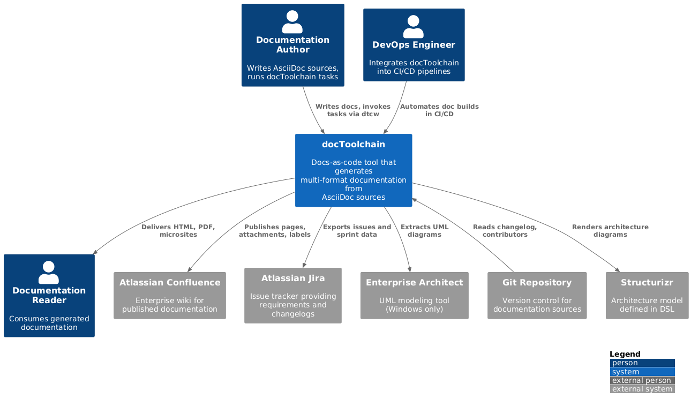
docToolchain Architecture Documentation
1. Introduction and Goals
docToolchain is an open-source implementation of the docs-as-code approach for software architecture documentation. It processes AsciiDoc source files and generates documentation in multiple output formats (HTML, PDF, DocBook, Reveal.js slides, microsites). Beyond format conversion, docToolchain integrates with external systems — Atlassian Confluence and Jira, Enterprise Architect, Structurizr, Excel, PowerPoint, and Visio — to import data into documentation or publish documentation to collaboration platforms.
v4 represents a fundamental shift: from a Gradle-based build tool to a lightweight, LLM-native docs-as-code platform.
Gradle is removed entirely (ADR-3), the core/ compilation module is dissolved back into scripts, jBake is replaced by a custom Groovy-based site generator (ADR-4), and the strategic focus shifts to LLM integration via MCP, Skills, Prompts, and Semantic Anchors (ADR-5).
1.1. Requirements Overview
The core functional requirements are:
-
Document generation: Convert AsciiDoc sources with embedded PlantUML diagrams to HTML, PDF, DocBook, and Reveal.js slides
-
Microsite generation: Build complete static documentation websites with a modern UI, using a custom Groovy-based generator (replacing jBake)
-
Confluence publishing: Publish generated HTML pages to Atlassian Confluence, maintaining page hierarchies, attachments, and labels
-
Jira integration: Export Jira issues and sprint changelogs to AsciiDoc or Excel format for inclusion in documentation
-
External tool import: Extract diagrams from Enterprise Architect, Structurizr, Visio, and PowerPoint; import tables from Excel; convert Markdown to AsciiDoc
-
Git metadata extraction: Generate changelogs and contributor lists from Git history
-
Cross-platform CLI: Provide a single command-line interface (
dtcw) that works on Linux, macOS (including Apple Silicon), and Windows. v4 scope: Linux and macOS run natively; Windows is supported via WSL2 in v4 — the nativedtcw.ps1/dtcw.batv4 execution path is not yet implemented (Chapter 11 debt). -
Multiple execution environments: Support local installation, Docker containers, and SDKMAN-based installation
-
Zero-configuration start: Enable first-time users to generate documentation with minimal setup
-
LLM-native document access: Provide structured document navigation and modification via MCP server (daCLI), supporting Skills, Prompts, and Semantic Anchors
-
Fast execution: Minimal startup overhead — no build framework initialization, no daemon, no dependency resolution at runtime
1.2. Quality Goals
These are the top five quality goals that drive the architecture decisions in this document. Further quality characteristics (LLM friendliness, LLM-managed configuration, modern UI, v3 backward compatibility, script-first maintainability, minimal repository footprint, clean uninstallation) are elaborated as derived requirements in the Chapter 10 quality tree, each cross-linked to its quality scenario.
| Priority | Quality Goal | Scenario |
|---|---|---|
1 |
No implicit cloud processing |
No data leaves the user’s machine unless explicitly configured. External services (kroki.io, Confluence, Jira) trigger a warning. Default diagram rendering is local via Docker. (QS-16) |
2 |
Performance (Startup + Throughput) |
Startup under 3 seconds, 50-page HTML generation under 10 seconds. No Gradle daemon, no dependency resolution overhead. (QS-9) |
3 |
Cross-platform portability |
Identical output on Linux, macOS (including Apple Silicon), and Windows across local, Docker, and SDKMAN environments. In v4, Windows is covered via WSL2; a native Windows wrapper path is planned (Chapter 11 debt). (QS-2, QS-10) |
4 |
Actionable error guidance |
When something fails, docToolchain tells the user what to do — not what went wrong. Every error message is a concrete action: which file to close, which config to set, which command to run. (QS-17) |
5 |
Ease of adoption |
A developer generates HTML documentation in under 5 minutes using only |
1.3. Stakeholders
| Role/Name | Contact | Expectations |
|---|---|---|
Documentation Author |
Technical writers and developers writing docs |
Simple CLI to generate and preview documentation. Seamless integration with editors, version control, and LLM assistants. |
LLM Agent |
AI assistants (Claude, ChatGPT, etc.) via daCLI MCP server |
Structured document access, section-level read/write, search, validation. Machine-readable Semantic Anchors for reliable navigation. |
Contributor / Developer |
Open-source contributors extending docToolchain |
Script-first architecture — no compilation step, no build system knowledge required. Fast feedback loop. Clear, simple codebase. |
DevOps Engineer |
CI/CD pipeline maintainers |
Headless execution mode, Docker support, predictable exit codes. Fast builds without Gradle overhead. |
Project Maintainer |
Ralf D. Mueller and core team |
Sustainable, lightweight architecture. No dependency on unmaintained upstream projects (Gradle plugins, jBake). Full control over the stack. |
End User |
Readers of generated documentation |
Modern, accessible UI in HTML and PDF. Responsive microsites with dark mode, search, and clear navigation. |
2. Architecture Constraints
2.1. Technical Constraints
| Constraint | Explanation |
|---|---|
Groovy (JVM) |
Primary implementation language (ADR-1). All scripts, the site generator, and integration logic are written in Groovy. This requires a JVM runtime — currently Java 17, but v4 should support Java 21+. |
No build framework |
Gradle is removed (ADR-3). No build system sits between |
AsciiDoc format |
All documentation sources must be in AsciiDoc. This is a fundamental design decision. Markdown sources can be converted as a preprocessing step. |
PlantUML + Graphviz |
Diagram rendering requires PlantUML (via |
Cross-platform including Apple Silicon |
Must run on Linux, macOS (x86_64 and ARM64/Apple Silicon), and Windows. No native/JNI dependencies that break on ARM64 (this is why jBake/OrientDB is replaced — ADR-4). |
Backward-compatible configuration |
|
2.2. Organizational Constraints
| Constraint | Explanation |
|---|---|
MIT License |
Open-source license. All dependencies must be compatible. No proprietary libraries in the core distribution. |
Community-driven development |
Contributions come from volunteers. The architecture must be approachable — script-first, no compilation step, fast feedback loop. |
GitHub as development platform |
Source code, issues, pull requests, CI/CD, and releases hosted on GitHub. CI/CD uses GitHub Actions. |
Docs-as-code philosophy |
Documentation is treated as source code: version-controlled, peer-reviewed, built automatically. |
Ecosystem coherence |
docToolchain is part of an ecosystem: daCLI (MCP server), Bausteinsicht (architecture-as-code), LLM-Prompts (interaction patterns). Architectural decisions must consider cross-project impact. |
2.3. Conventions
| Convention | Explanation |
|---|---|
Architecture Decision Records |
Significant decisions are documented as ADRs with Pugh Matrix evaluation against quality goals. |
Groovy as scripting language |
ADR-1. Exception: Visual Basic for Windows COM automation. |
Semantic Versioning |
v3 is current production. v4 is the next major version with breaking changes (Gradle removal). |
Groovy SimpleTemplate |
Template engine for microsite generation (ADR-4). Existing templates from v3 are reused. |
Semantic Anchors and Contracts |
Anchors are precise reference terms ("arc42", "SOLID", "Docs-as-Code") that activate rich knowledge in LLMs. Contracts (in |
Scripts as primary code artifacts |
No compiled modules. Groovy scripts are executed directly. Change-to-test cycle under 5 seconds (QS-11). |
3. Context and Scope
docToolchain sits between documentation authors (human and AI) and their audiences. Authors write AsciiDoc sources in a version-controlled repository; docToolchain processes these sources and delivers the output to readers. In v4, LLM agents become first-class users of the system via daCLI’s MCP server.
3.1. Business Context
| Communication Partner | Input to docToolchain | Output from docToolchain |
|---|---|---|
Documentation Author |
AsciiDoc source files, configuration ( |
Generated HTML, PDF, DocBook, Reveal.js slides, microsite |
LLM Agent (via daCLI) |
MCP tool calls: |
Structured section content, metadata, validation results |
Bausteinsicht |
JSONC architecture models, draw.io diagram exports (PNG, PlantUML) |
— (consumed as images/includes in AsciiDoc sources) |
LLM-Prompts |
Prompt-guided AsciiDoc output (arc42 chapters, ADRs, quality scenarios) |
— (consumed as doc sources) |
Atlassian Confluence |
— |
HTML pages with attachments, page hierarchy, labels |
Atlassian Jira |
Issues (via JQL queries), sprint data, custom fields |
— |
Enterprise Architect |
UML diagrams (via COM automation, Windows only) |
— |
Git Repository |
Commit history, contributor metadata |
— |
Structurizr |
Architecture model (DSL files) |
— |
3.2. Technical Context
| External System | Protocol / Interface | Configuration |
|---|---|---|
daCLI |
MCP protocol via stdio. LLMs call 10 tools for document navigation, search, and modification. |
|
Atlassian Confluence |
REST API v1 (Server/Data Center) or v2 (Cloud). HTTPS with Basic Auth or Bearer Token. |
|
Atlassian Jira |
REST API v3 (Cloud) or v1 (Server). HTTPS with Basic Auth or Bearer Token. |
|
Enterprise Architect |
COM automation via VBScript. Reads |
|
Structurizr |
File-based. Parses Structurizr DSL, renders to PlantUML. |
|
Git |
Local CLI ( |
|
AsciiDoctor CLI |
External tool (gem/brew/apt), auto-installed by |
|
Groovy Site Generator |
Custom Groovy script replacing jBake. Reads AsciiDoc + Groovy SimpleTemplates, generates static HTML microsite. |
|
4. Solution Strategy
The following table maps each quality goal to the architectural approach that achieves it and the supporting architecture decision(s). The first five rows are the top quality goals from Introduction and Goals (in priority order); the remaining rows cover the derived quality requirements elaborated in Quality Requirements.
| Quality Goal | Architectural Approach | Rationale | ADR |
|---|---|---|---|
1. No implicit cloud processing |
Local-default diagram rendering. |
Privacy is the #1 goal. Defaulting to local processing means the safe path is the default path. |
ADR-9 |
2. Performance (Startup + Throughput) |
Remove Gradle entirely. |
Gradle adds 10-95 seconds of overhead per invocation. Direct script execution eliminates this completely. |
ADR-3, ADR-6, ADR-7 |
3. Cross-platform portability |
Replace jBake with custom Groovy SSG; render diagrams server-side. No OrientDB (JNI issues on ARM64). No unmaintained upstream dependencies. AsciiDoctor as external CLI tool (ADR-6). |
jBake’s OrientDB dependency breaks Apple Silicon. The project is unmaintained. A custom generator plus server-side rendering eliminates the platform risk. |
ADR-4, ADR-6, ADR-9 |
4. Actionable error guidance |
|
Users need to know what to do next, not read a stack trace. Guidance is a mandatory constructor field, so it cannot be skipped. |
ADR-8 |
5. Ease of adoption |
dtcw auto-bootstrapping. |
Unchanged from v3. The principle is proven and effective. |
ADR-6 (AsciiDoctor auto-install) |
derived: Script-first Maintainability |
Scripts as primary code artifacts. No compiled |
Compilation creates a slow feedback loop. Scripts enable change-to-test in under 5 seconds. Contributors need no build system knowledge. |
ADR-3 (supersedes ADR-2) |
derived: LLM Friendliness |
Ecosystem approach. daCLI provides MCP-based document access. Bausteinsicht provides architecture-as-code with JSONC. LLM-Prompts provide reusable interaction patterns. Semantic Anchors enable machine-readable navigation. |
LLMs need structured access, not raw files. The ecosystem tools each solve one aspect of LLM integration. |
ADR-5 |
derived: Modern UI |
Custom site generator with modern theme. Full control over HTML output. Phase 1: clean, responsive design with dark mode and search. Phase 2: LLM-augmented UI (future). |
Docsy theme is dated. jBake replacement gives full control over output design. |
ADR-4 |
derived: v3 backward compatibility |
Config file compatibility. |
Existing users must upgrade without pain. Config is the contract. |
ADR-4 (metadata), ADR-3 (dtcw) |
derived: Minimal repository footprint + clean uninstallation |
Everything installs under |
A documentation tool must not pollute the project repo or the user’s system. Removability builds trust. |
ADR-3, ADR-7 |
4.1. Key Technology Decisions
| Technology | Decision Rationale |
|---|---|
Groovy (scripting) |
JVM language with native Java interop. Scripts run without compilation. Groovy’s |
Direct JVM invocation (replacing Gradle) |
|
AsciiDoctor CLI (external tool) |
AsciiDoc processor installed as standalone tool (gem/brew/apt), auto-installed by |
Custom Groovy SSG (replacing jBake) |
Groovy SimpleTemplate engine. In-memory content model (no database). Reads jBake-compatible metadata headers. Modern HTML output. (ADR-4) |
daCLI (MCP server) |
Python-based MCP server providing 10 tools for structured document access. Separate process, communicates via stdio. Already operational. (ADR-5) |
Bausteinsicht |
Go-based architecture-as-code tool. JSONC models with bidirectional draw.io sync. LLMs read/write JSONC natively. (ADR-5) |
5. Building Block View
This section decomposes docToolchain v4 into its static building blocks at three levels of detail. The key structural change from v3: Gradle Orchestration and the compiled Core Module are removed. The architecture simplifies to two layers plus an ecosystem of companion tools.
5.1. Level 1: Whitebox Overall System
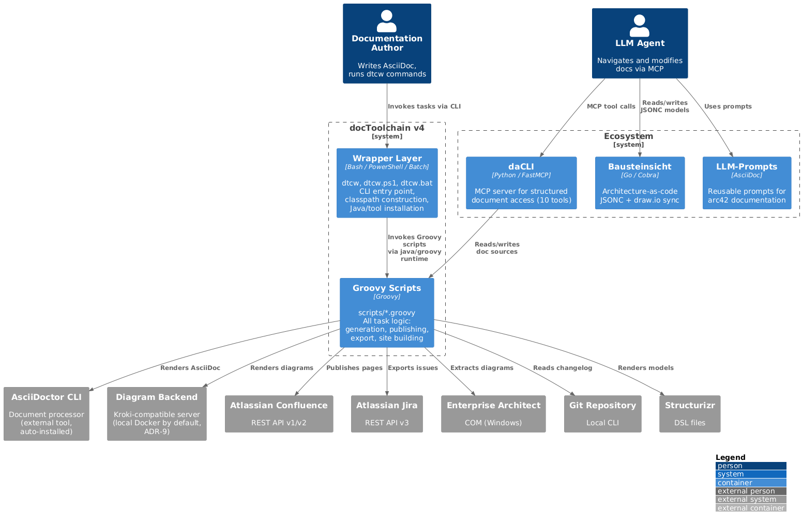
|
Tip
|
Source of truth (architecture-as-code). This Level-1 view is also modelled as a versioned Bausteinsicht JSONC model at |
- Motivation
-
v4 simplifies from four layers (Wrapper → Gradle → Script Plugins → Core Module) to two layers (Wrapper → Scripts). The Gradle orchestration layer and the compiled Core Module are eliminated. Business logic returns to scripts. Companion tools (daCLI, Bausteinsicht, LLM-Prompts) handle LLM integration as an ecosystem rather than embedding it into docToolchain itself.
|
Note
|
This Level-1 view is a container zoom: it shows the two internal building blocks (Wrapper, Groovy Scripts) and the external systems they call at runtime — AsciiDoctor, Confluence, Jira, and the diagram rendering backend (Kroki, ADR-9). The remaining Chapter 3 context actors (Enterprise Architect, Git, Structurizr) are reached through the same The ecosystem tools differ in lifecycle: daCLI is exercised at runtime (the LLM-edit scenario S3 in Chapter 6 calls it). Bausteinsicht and LLM-Prompts are design-time companion tools — they are used by authors/LLMs while writing documentation; docToolchain core never invokes them at runtime. They are shown for ecosystem context only. |
- Contained Building Blocks
| Building Block | Responsibility | Interface | Location |
|---|---|---|---|
Wrapper Layer |
Cross-platform CLI entry point. Constructs classpath from |
CLI: |
|
Groovy Scripts |
All task logic: document generation (AsciiDoctor invocation), site generation (custom SSG), Confluence publishing, Jira export, changelog extraction, and all other features. Each script is a self-contained unit that runs without compilation. |
Task entry points: one |
|
daCLI (Ecosystem, runtime) |
MCP server providing 10 tools for structured document access: navigation, search, section-level read/write, validation. Separate Python process communicating via stdio. |
MCP over stdio ( |
Separate repository ( |
Bausteinsicht (Ecosystem, design-time only) |
Architecture-as-code tool. JSONC models with bidirectional draw.io sync. Exports PlantUML/PNG for embedding in AsciiDoc. Used by authors/LLMs at design time; not invoked by docToolchain core at runtime. |
CLI with |
Separate repository ( |
LLM-Prompts (Ecosystem, design-time only) |
Reusable prompt collection for arc42 documentation: chapter generation, ADR creation, quality scenarios, risk assessment, stakeholder analysis. Used by authors/LLMs at design time; not invoked by docToolchain core at runtime. |
Prompt text (AsciiDoc) consumed by an LLM; no runtime API. |
Separate repository ( |
5.2. Level 2: Whitebox Groovy Scripts
The scripts are organized into functional groups. Unlike v3 (where scripts were Gradle task definitions applied via apply from:), v4 scripts are standalone Groovy files invoked directly.
| Category | Scripts | Purpose |
|---|---|---|
Document Generation |
|
Core document generation. Calls AsciiDoctor CLI (external tool, ADR-6) for rendering. Replaces the |
Site Generation |
|
Custom Groovy-based static site generator ( |
Atlassian Integration |
|
Confluence publishing (with smart MD5-based update detection) and Jira data export. Contains the Confluence client hierarchy (V1/V2) and Jira client/converter logic formerly in |
External Tool Export |
|
Extract diagrams and models from external tools. EA/PPT/Visio are Windows-only (VBScript). |
Data Import/Export |
|
Import data from Excel, convert Markdown, extract Git metadata, run Pandoc conversions. |
Utilities |
|
Supporting tasks: aggregate includes, fix encodings, validate HTML, download templates. |
Configuration |
|
Loads |
5.3. Level 3: Whitebox Atlassian Integration
The Atlassian integration scripts contain the richest business logic. In v3 this was the compiled core/ module; in v4 it returns to script form.
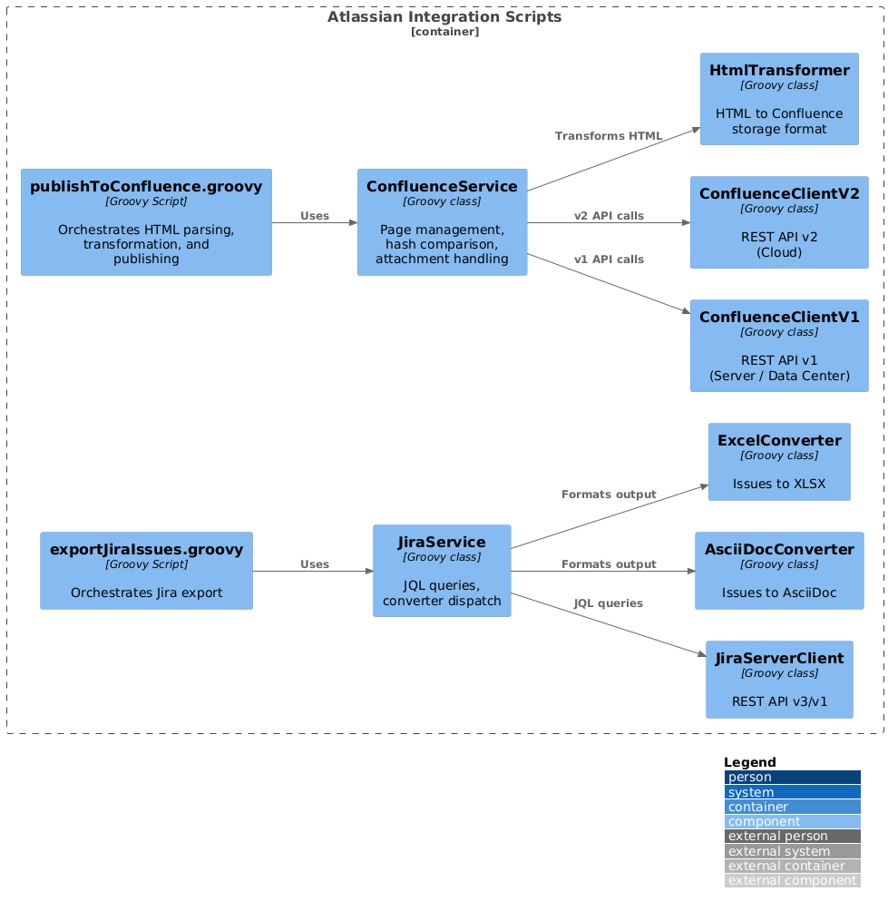
The key difference from v3: these classes are not compiled into a Shadow JAR. They are Groovy source files loaded at runtime. The script entry point (publishToConfluence.groovy) loads helper classes from a shared lib/ directory or via inline GroovyClassLoader.
6. Runtime View
The v4 runtime is significantly simpler than v3: no Gradle daemon, no build graph, no dependency resolution. Tasks are individual script invocations.
6.1. Scenario 1: Generate HTML Documentation
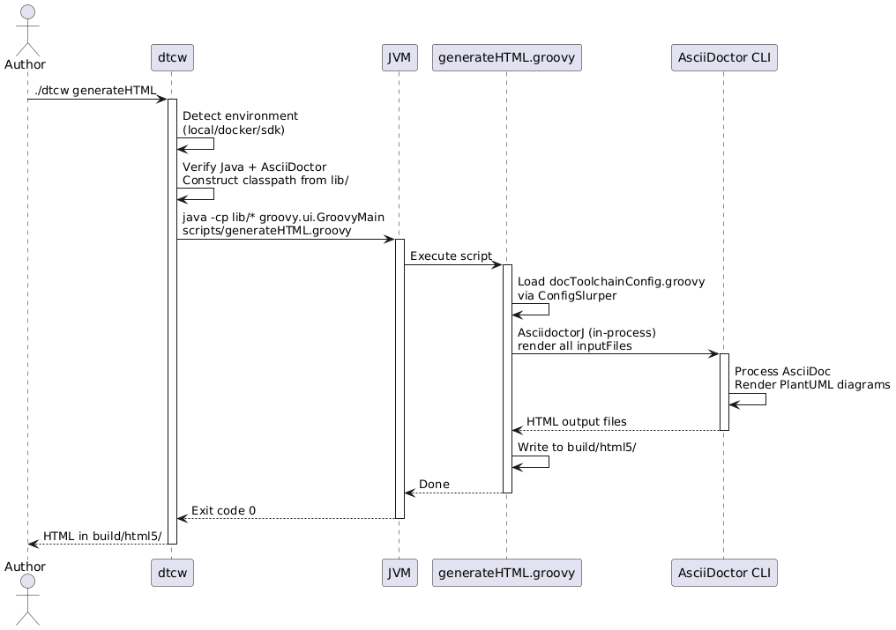
Key differences from v3: No Gradle overhead and no Gradle daemon. AsciiDoctor runs embedded as AsciidoctorJ in the same JVM (ADR-6, revised — the external-CLI option was evaluated but not adopted), so JRuby still initialises in-process on the first render. The Groovy script invokes AsciidoctorJ directly for all inputFiles. Startup is JVM cold start plus JRuby/AsciidoctorJ initialisation (~1-2s combined).
6.2. Scenario 2: Publish to Confluence
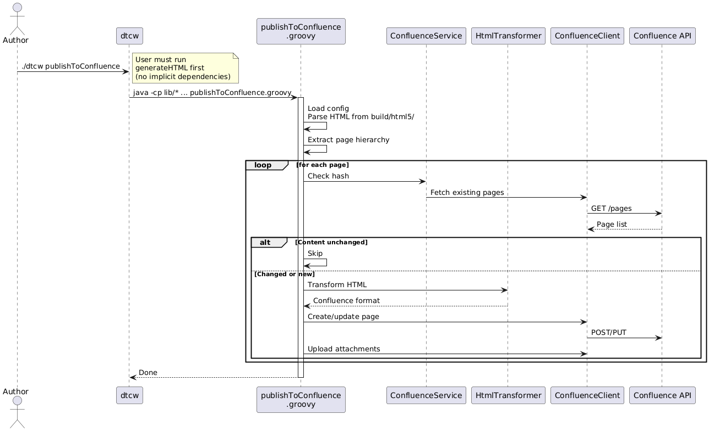
Key difference from v3: The user runs generateHTML and publishToConfluence as separate, explicit commands. There are no implicit task dependencies — each script is self-contained. This matches real-world usage: users rarely chain tasks automatically.
6.3. Scenario 3: LLM Modifies Documentation via daCLI
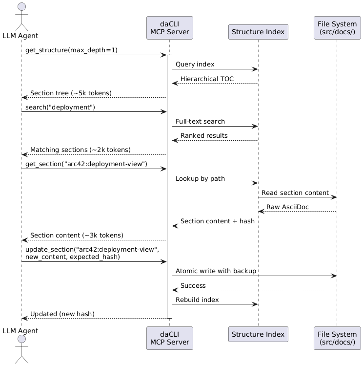
This is a new v4 scenario. The LLM navigates a 50-page documentation project using ~10k tokens instead of the ~100k tokens needed to read all files. daCLI maintains an in-memory index for O(1) lookups. Optimistic locking (hash comparison) prevents concurrent modification conflicts.
6.4. Scenario 4: Generate Microsite
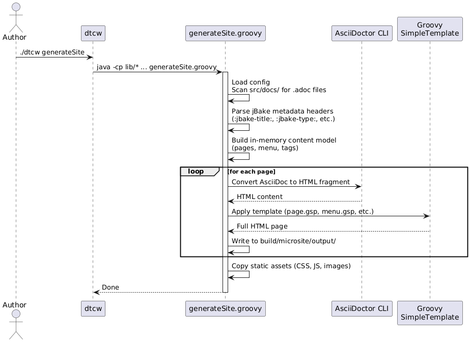
Key difference from v3: No jBake library, no OrientDB content database. The site generator is a Groovy script that reads files, builds an in-memory model, applies Groovy SimpleTemplate templates, and writes static HTML. Runs on all platforms including Apple Silicon (QS-10).
6.5. Scenario 5: Error and Recovery — Publish Fails with HTTP 401 / Locked File
This scenario exercises the error-handling path, not the happy path. It shows how the DtcException hierarchy (ADR-8, Chapter 8.5 Error Handling) turns a failure into an actionable message and a differentiated exit code (QS-17).
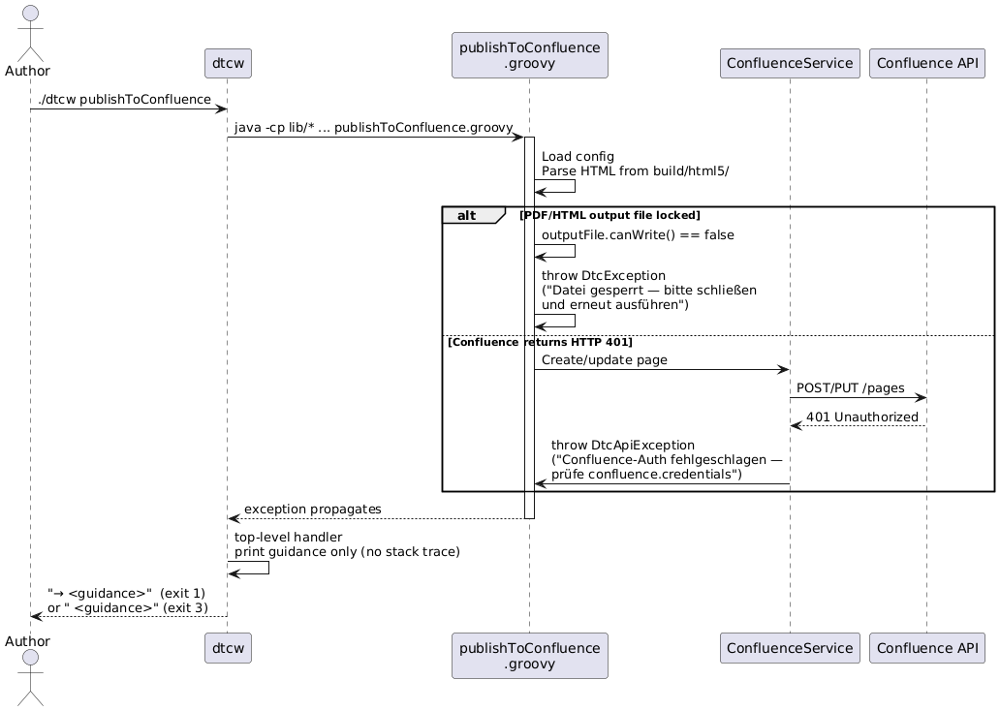
Recovery behaviour: A locked output file raises a DtcException (exit code 1); an HTTP 401 raises a DtcApiException (exit code 3). In both cases the top-level handler prints only the guidance message — what the user must do (close the file, fix the credentials) — and suppresses the stack trace. CI/CD distinguishes a config/credential problem (exit 3) from a user-fixable local issue (exit 1) without parsing logs. This realises quality goal #4 (Actionable error guidance, QS-17) and the Chapter 8.5 Error Handling concept; the exception hierarchy and exit-code table are defined in ADR-8.
7. Deployment View
docToolchain v4 supports three execution environments (unchanged from v3). The key difference: without Gradle, the installation footprint is smaller and startup is faster.
7.1. Infrastructure Level 1: Execution Environments
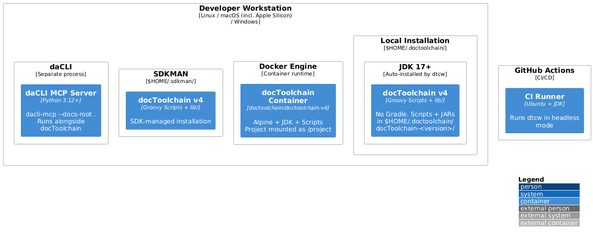
- Motivation
-
Three environments remain equally supported (QS-2). Local is fastest (no container overhead). Docker guarantees reproducibility. SDKMAN integrates with JVM ecosystem tooling. daCLI runs as a separate process alongside any environment.
| Environment | v4 changes from v3 | Advantages | Typical Use |
|---|---|---|---|
Local |
No Gradle wrapper download (saves ~95s first run). No daemon. Smaller installation (no Gradle distribution). |
Fastest startup (under 3s). Direct filesystem access. |
Daily development, documentation preview |
Docker |
Smaller image (no Gradle). Faster container startup. |
Consistent environment. No local dependencies beyond Docker. |
CI/CD pipelines, team standardization |
SDKMAN |
Unchanged. |
Familiar JVM tooling. Version switching. |
JVM developers, multi-version testing |
daCLI (companion) |
New in v4. Not bundled — runs as a separate process. |
LLM document access. Runs alongside any docToolchain environment. |
LLM-assisted documentation workflows |
7.2. Infrastructure Level 2: CI/CD Pipeline
The CI/CD pipeline simplifies with Gradle removed:
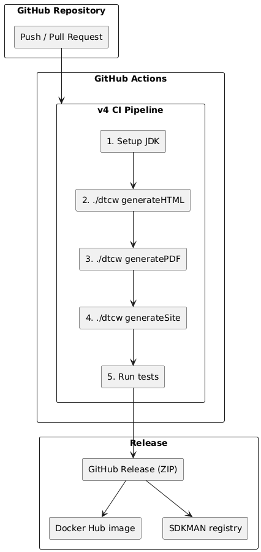
Key simplification: No Gradle cache setup, no ./gradlew clean, no dependency resolution step. Each ./dtcw command is a direct script invocation with predictable timing.
8. Cross-cutting Concepts
This chapter leads with the five mandated baseline crosscutting concepts (Threat Model, Security, Test, Observability, Error Handling), then documents the docToolchain-specific concepts (Configuration Management, Script Execution Model, LLM Integration, Content Transformation Pipeline, Custom Site Generator).
8.1. Threat Model (STRIDE)
docToolchain is a local CLI document generator. It reads local files, runs Groovy scripts and Groovy config, calls external REST APIs (Confluence, Jira), optionally calls LLM providers (via the daCLI ecosystem), optionally renders diagrams through a Kroki-compatible server (local Docker by default, ADR-9), and downloads Java, AsciiDoctor, templates, and themes over the network on first use.
The following STRIDE analysis enumerates the concrete threats this attack surface creates. Each threat carries a stable ID (T-NNN) referenced by the mitigations in the Security concept below and by the risks in Risks and Technical Debts.
| T-ID | STRIDE Category | Threat | Affected Building Block (Ch5) |
|---|---|---|---|
T-001 |
Tampering / Spoofing |
A man-in-the-middle or spoofed mirror serves a tampered AsciiDoctor install, template, theme, or JDK during |
Wrapper Layer ( |
T-002 |
Information Disclosure |
API tokens and credentials leak into console output, build logs, or generated CI snippets — for example a stack trace that echoes |
Groovy Scripts ( |
T-003 |
Tampering / Elevation of Privilege |
A malicious |
Groovy Scripts ( |
T-004 |
Information Disclosure / Tampering (SSRF) |
A configured |
Groovy Scripts + Wrapper (diagram rendering, REST clients) |
T-005 |
Elevation of Privilege |
Untrusted |
Wrapper Layer + Groovy Scripts ( |
T-006 |
Tampering / Elevation of Privilege |
A tampered or vulnerable dependency JAR in |
Groovy Scripts ( |
8.2. Security
Each mitigation below references the T-IDs it closes. Mitigations marked "already in code" exist today; the rest are decided concepts to be enforced as the v4 scripts mature.
| Mitigation | Description | Closes |
|---|---|---|
HTTPS for all downloads and APIs |
|
T-001, T-004 |
Secrets via environment, never config |
Partly in code. Credentials should be supplied through environment variables or external config rather than committed into |
T-002 |
Zip-slip / path-traversal guard |
In code. |
T-003 |
Local-default diagram rendering |
Planned — not yet in code. The intended control (default |
T-004 |
Treat config and scripts as trusted code |
Documentation states plainly that |
T-005 |
Dependency CVE scanning |
Trivy scans |
T-006 |
8.2.1. Trust model and accepted risks
docToolchain’s primary use case is a developer rendering their own trusted documentation locally. In that model the user already runs their own code: docToolchainConfig.groovy is Groovy that executes (T-005), so SafeMode.UNSAFE, allow-uri-read, arbitrary include::, and config-supplied URLs grant an attacker nothing beyond what running one’s own project already grants. These are therefore accepted risks by design, not defects: download checksum/signature pinning, SSRF via config URLs, SafeMode.UNSAFE as the default, and code execution via config/scripts. They are recorded here for honesty; no mitigation is planned for the local case.
The one context where this model breaks is CI / public-PR builds: build logs can be public, and a pull request can introduce a malicious include::https://…[] or a credential-shaped value. There the gaps above become real-ish. The honest posture is CI hardening, not "the tool is insecure": redact secret-shaped config keys before any println config / error output (R-008), and consider a non-UNSAFE safe mode for rendering untrusted PRs. The mitigations marked planned in the table above (T-002, T-004) are the ones that close this CI gap.
8.3. Test
Testing follows a pyramid, broad at the base:
-
Unit (Spock) — the largest layer. Spock specifications in
core/cover the Atlassian client/converter logic, configuration handling, and HTML transformation. These trace to the business rules they enforce (e.g. idempotent Confluence publishing — QS-4 — is unit-tested via MD5 hash comparison). -
Wrapper (BATS) —
test/*.batsexercisedtcwacross local/Docker/SDKMAN environments (QS-2, QS-6). They trace to the cross-platform and installability use cases. -
Integration — end-to-end
./dtcw local generateHTML/generatePDF/generateSiteruns verify the full pipeline against real AsciiDoctor (QS-8). Environment-dependent tests skip gracefully (QS-7).
CodeNarc static analysis (ADR-11) sits alongside the pyramid as a non-execution gate. Property-based tests are deferred until the v4 Groovy scripts carry business logic (ADR-11).
8.4. Observability
docToolchain is a short-lived CLI process, so observability is console- and artifact-based rather than service telemetry:
-
Console output — progress and warnings stream to stdout/stderr. The privacy warning (QS-16) and actionable error guidance (ADR-8) are the primary user-facing signals.
-
Build artifacts — generated HTML/PDF/microsite under
build/, plus the HTML sanity-check report, are the durable evidence of a run. -
Exit codes — differentiated exit codes (0 success, 1 user-fixable, 2 config, 3 API/network, 99 bug) make runs observable to CI/CD without log scraping (ADR-8, QS-5).
-
LLM trace / cost (planned) — for LLM-assisted workflows via the ecosystem, an optional
llm-traceand per-run token/cost summary are envisioned so LLM interactions are auditable. Not yet implemented.
8.5. Error Handling
Error handling is governed by ADR-8 (Actionable Error Guidance). Every user-recoverable error is thrown as a DtcException (or DtcConfigException / DtcApiException) carrying a mandatory guidance field — what the user should do, not what went wrong. A top-level handler maps each exception type to a differentiated exit code and prints only the guidance message; stack traces appear only for genuine bugs (exit code 99).
This is a recovery-first, fail-fast strategy: there is no silent println-and-continue. Network and API failures surface as DtcApiException with a remediation step (e.g. "check `confluence.credentials`"). See ADR-8 for the exception hierarchy, exit-code table, and the runtime error scenario in Runtime View.
8.6. Configuration Management
Unchanged from v3 in principle, simplified in implementation.
| Layer | Source | Precedence |
|---|---|---|
Project configuration |
|
Primary. Project-specific settings. |
CLI overrides |
Environment variables ( |
Highest. Per-invocation customization. |
gradle.properties is removed with Gradle. Build-time settings that were in gradle.properties (e.g., JVM memory, version) move to dtcw defaults or docToolchainConfig.groovy.
LLM-first principle (QS-15): The config file contains only deviations from defaults. All defaults are defined in code and documented in a machine-readable reference. This enables LLMs to read a config, understand what the user has customized, and make targeted changes — without hallucinating or duplicating default values. A minimal config for a project that only generates HTML might be just:
inputFiles = [
[file: 'arc42/arc42.adoc', formats: ['html','pdf']],
]Everything else (outputPath, inputPath, imageDirs, etc.) comes from sensible defaults in the scripts.
8.7. Script Execution Model
v4 replaces Gradle’s task model with direct script invocation:
-
User runs
./dtcw <taskName>(e.g.,./dtcw generateHTML) -
dtcwconstructs the classpath from thelib/directory (or resolves via Grape) -
dtcwinvokesjava -cp <classpath> groovy.ui.GroovyMain scripts/<taskName>.groovy -
The script loads configuration, executes its logic, writes output, and exits
-
No daemon persists between invocations
Tasks are independent. There are no implicit dependencies. Users call them in the order they need: ./dtcw generateHTML then ./dtcw publishToConfluence. This matches real-world usage patterns.
8.8. Authentication Mechanisms
The concrete authentication details behind the Security concept above (mitigation for T-002). Unchanged from v3:
-
Basic Auth: Username + API token, encoded as Base64 for
Authorizationheader. -
Bearer Token: OAuth or personal access token.
-
Credentials should be supplied via environment variables or external config rather than committed into config files.
-
Planned (R-008): properties containing
credential,token, orsecretare to be masked in output. No redaction is implemented yet — do not rely on masking today, especially in CI logs. -
User-Agent header identifies docToolchain version for API calls.
8.9. Headless / CI Mode
Unchanged from v3:
-
dtcwdetects headless mode viaDTC_HEADLESSenvironment variable or absence of TTY. -
All interactive prompts suppressed; defaults auto-accepted.
-
Critical for GitHub Actions, Jenkins, and other CI/CD platforms.
8.10. LLM Integration Architecture
New in v4. docToolchain supports LLMs through an ecosystem of companion tools:
daCLI (MCP Server) provides 10 tools for structured document access:
-
get_structure(max_depth)— Hierarchical table of contents -
get_section(path)— Read section content by path -
search(query)— Full-text search with relevance scoring -
update_section(path, content, expected_hash)— Modify with optimistic locking -
insert_content(path, position, content)— Insert before/after/append -
get_elements(type, section)— Extract code blocks, tables, diagrams -
get_metadata()— Project-wide statistics -
get_dependencies()— Include tree -
get_sections_at_level(level)— Sections by depth -
validate_structure()— Structural integrity checks
Semantic Anchors are well-defined terms, methodologies, and frameworks that serve as precise reference points when communicating with LLMs. Rather than lengthy instructions, a single anchor like "arc42", "SOLID Principles", or "Socratic Method" activates a rich body of interconnected knowledge in the LLM. Quality criteria for anchors: Precise, Rich, Consistent, Attributable. (See https://llm-coding.github.io/Semantic-Anchors/)
Semantic Contracts bundle multiple anchors into reusable working agreements, defined in CLAUDE.md files:
-
"Specification = Use Cases with Activity Diagrams + Gherkin acceptance criteria"
-
"Architecture Documentation = arc42 + C4 diagrams + ADRs with Pugh Matrix"
-
"Writing Style = Plain English according to Strunk & White"
These contracts ensure that LLMs apply consistent conventions across a project without repeating detailed instructions in every prompt.
LLM-Prompts provide reusable interaction patterns:
-
arc42 Chapter Generator — step-by-step architecture documentation
-
Architecture Decision Record — structured decisions with Pugh Matrix
-
Quality Scenarios Builder — testable quality requirements
-
Risk Assessment, Stakeholder Analysis, Context Diagram Generator, etc.
Bausteinsicht provides architecture-as-code:
-
JSONC models that LLMs read/write natively
-
Bidirectional draw.io sync — model changes update diagrams and vice versa
-
CLI with
--format jsonfor programmatic access
8.11. Content Transformation Pipeline
Unchanged from v3 for Confluence publishing:
-
AsciiDoctor generates HTML5 from AsciiDoc sources
-
jsoup parses HTML into DOM tree
-
HtmlTransformer rewrites DOM for Confluence compatibility
-
LinkTransformer rewrites cross-references
-
CodeBlockTransformer formats code blocks as Confluence macros
8.12. Custom Site Generator: MicrositeBaker (replacing jBake)
New in v4. The site generator (MicrositeBaker, scripts/lib/MicrositeBaker.groovy, driven by generateSite.groovy) is a Groovy class implementing:
-
Content scanning: Recursively scan
src/docs/for.adocfiles -
Metadata extraction: Parse jBake-compatible headers (
:jbake-title:,:jbake-type:,:jbake-menu:,:jbake-order:) -
In-memory model: Build content model (pages, menu structure, tags) — no database
-
AsciiDoc rendering: Call AsciiDoctor CLI (external tool, ADR-6) for each page
-
Template application: Apply Groovy SimpleTemplate templates (reused from v3’s
src/site/templates/) -
Static output: Write HTML + assets to
build/microsite/output/ -
Modern theme: Clean, responsive design with dark mode and search (Phase 1)
9. Architecture Decisions
All architecture decisions are evaluated against the quality scenarios defined in Quality Requirements. docToolchain v4 represents a fundamental shift: from a Gradle-based build tool to an LLM-native docs-as-code platform. v3 is the current production version.
The ADRs themselves live in the register at src/docs/arc42/adrs/ and are included below.
Statuses follow Nygard values (Proposed / Accepted / Superseded / Deprecated). Accepted (inferred) marks decisions whose rationale was reconstructed from the codebase (carried forward from v3).
| ADR | Title | Status |
|---|---|---|
ADR-1 |
Use Groovy as Primary Scripting Language |
Accepted (inferred) |
ADR-2 |
Separate Core Logic from Gradle |
Superseded by ADR-3 |
ADR-3 |
Remove Gradle — Direct Groovy Script Execution |
Accepted (for v4) |
ADR-4 |
Replace jBake for Static Site Generation |
Accepted (for v4) |
ADR-5 |
LLM-Native Architecture |
Accepted (for v4) |
ADR-6 |
AsciiDoctor as External Tool with Versioned Auto-Installation |
Accepted (for v4) — revised (AsciidoctorJ embedded) |
ADR-7 |
|
Accepted (for v4) |
ADR-8 |
Actionable Error Guidance |
Accepted (for v4) — carrier pending (R-004) |
ADR-9 |
Server-Based Diagram Rendering via Kroki-Compatible API |
Accepted (for v4) — not yet implemented (R-007) |
ADR-10 |
Risk-Based Quality Assurance (Vibe-Coding Risk Radar) |
Accepted |
ADR-11 |
Tier 2 Mitigation Implementation |
Accepted |
ADR-12 |
Tasks Are Self-Contained Groovy Scripts — No Compiled Core Module at Runtime |
Accepted (port pending) |
ADR-13 |
|
Accepted (inferred) |
ADR-14 |
Task Discovery via |
Accepted (inferred) |
ADR-15 |
Structural Diagrams as Architecture-as-Code (Bausteinsicht model, PlantUML render) |
Accepted (for v4) — export wiring deferred |
ADR-16 |
Project-Local Tasks — Custom Tasks and Monkey-Patching |
Accepted (for v4) |
ADR-17 |
|
Accepted (for v4) |
ADR-18 |
v4 Task Dispatch Moves into a Groovy Launcher |
Proposed |
ADR-TBD-1 |
Confluence API Version Strategy |
Proposed |
ADR-TBD-2 |
Jira Cloud vs. Server Client Architecture |
Proposed |
9.1. ADR-1: Use Groovy as Primary Scripting Language
-
Status: Accepted (inferred) — carried forward from v3, rationale reconstructed from the codebase
-
Context: docToolchain uses scripts in multiple languages. The team needed a consistent primary language for maintainability.
-
Decision: Use Groovy for all scripting tasks. Exception: Visual Basic for Windows COM automation (Enterprise Architect, PowerPoint export) where no Java library exists.
-
Alternatives considered:
| Criterion | Groovy | Kotlin (script) | Plain Java |
|---|---|---|---|
No compilation step (QS-11) |
+1 (runs as script) |
0 (kotlinc startup is slow) |
–1 (requires compile) |
Java interop / ecosystem reuse |
+1 (seamless) |
+1 (seamless) |
+1 (native) |
Contributor friendliness (QS-1) |
+1 (forgiving, dynamic) |
0 (stricter, less known here) |
–1 (verbose, ceremony) |
Config DSL ( |
+1 (built-in) |
–1 (no equivalent) |
–1 (none) |
Existing codebase fit |
+1 (already Groovy) |
–1 (full rewrite) |
0 (partial) |
Total |
+5 |
–1 |
–3 |
-
Quality Tradeoffs:
-
Supports QS-1 (Extensibility): Contributors need only one language to extend the system.
-
Supports QS-2 (Portability): Groovy runs on the JVM, same bytecode on all platforms.
-
Supports QS-11 (Script-first): Groovy scripts run without compilation.
-
Compromises QS-2 (Portability) partially: VBScript exceptions limit some features to Windows.
-
9.2. ADR-2: Separate Core Logic from Gradle — SUPERSEDED
-
Status: Superseded by ADR-3
-
Context: ADR-2 proposed isolating business logic into a compiled
core/submodule (Shadow JAR) to decouple from Gradle. -
Superseded because: v4 removes Gradle entirely (ADR-3) and reverts to scripts as the primary code organization. Compiled code requires a build step that slows the edit-run cycle. Scripts are easier to adapt and maintain, especially for community contributors. The problem ADR-2 tried to solve (Gradle coupling) is better addressed by removing Gradle, not by adding a compilation layer.
9.3. ADR-3: Remove Gradle — Direct Groovy Script Execution
-
Status: Accepted (for v4)
-
Context: Gradle has been the task orchestration framework since docToolchain’s inception. Over time it has caused significant problems:
-
Slow startup (~95 seconds first run, 10-15 seconds subsequent runs)
-
Complex configuration hard for contributors to understand
-
Tight coupling between business logic and build system
-
Gradle daemon management issues (zombie processes, port conflicts)
-
Dependency resolution overhead for simple documentation tasks
-
-
Decision: Remove Gradle entirely. The
dtcwwrapper invokes Groovy scripts directly via thejava/groovyruntime. AsciiDoctor is an external CLI tool, auto-installed by dtcw (ADR-6). Task orchestration is handled by simple script conventions, not a build framework. -
Alternatives considered:
| Criterion | Keep Gradle | dtcw + Groovy direct | Switch to Maven | Custom task runner |
|---|---|---|---|---|
Startup time |
–1 |
+1 |
0 |
+1 |
Contributor friendliness |
–1 |
+1 |
0 |
0 |
Ecosystem compatibility |
+1 |
0 |
+1 |
–1 |
Maintenance burden |
–1 |
+1 |
0 |
0 |
LLM-friendliness |
–1 |
+1 |
–1 |
+1 |
Total |
–3 |
+4 |
0 |
+1 |
-
Quality Tradeoffs:
-
Supports QS-9 (Fast startup): No Gradle wrapper, no daemon, no dependency resolution. Startup under 3 seconds.
-
Supports QS-11 (Script-first): Scripts are the primary code artifacts, no compilation needed.
-
Supports QS-1 (Extensibility): Adding a feature requires no build system knowledge.
-
Supports QS-3 (Usability): Simpler mental model for contributors.
-
Risk on QS-14 (v3 compatibility): v3 projects using
./gradlewdirectly will need to switch to./dtcw. Thedtcwinterface remains stable.
-
-
Consequences:
build.gradle,settings.gradle,gradle.properties,libs.versions.toml, and thegradle/wrapper directory are removed. Thecore/module is dissolved back into scripts. Dependencies are managed as JARs in alib/directory or downloaded on demand. This decision creates risk R-002 (v3 migration path) — Gradle-based workflows break — and R-003 (script loading and classpath conflicts) now that Gradle no longer resolves dependencies; both are tracked in Risks and Technical Debts.
9.4. ADR-4: Replace jBake for Static Site Generation
-
Status: Accepted (for v4) — implemented in v4.0 as
MicrositeBaker(scripts/lib/MicrositeBaker.groovy, see Chapter 8) -
Context: jBake is the current static site generator for docToolchain’s microsite feature. Critical problems:
-
Unmaintained: Governance crisis (Issue #785). PRs not reviewed. v2.7.0 not published to Maven Central.
-
Apple Silicon: Does not run on modern Macs without workarounds (OrientDB JNI issue #709). Fix exists but is not released.
-
Java 21 incompatible: Bundled Groovy too old for JDK 21 class files (Issue #797).
-
Heavy: OrientDB adds 38MB of JARs for a database that could be an in-memory list.
-
Best available fork: rschwietzke/jbake removes OrientDB + upgrades to Java 21 (PR #800), but is stuck waiting for review.
-
-
Decision: Build a custom Groovy-based static site generator using Groovy SimpleTemplate. The core requirement is: AsciiDoc files + templates → static HTML site with navigation, search, and theming.
-
Alternatives considered:
| Criterion | jBake Fork (rschwietzke) | Custom Groovy SSG |
|---|---|---|
Groovy template reuse |
+1 |
+1 |
Stack consistency |
0 (external Java project) |
+1 (own code) |
Maintenance control |
0 (dependent on fork maintainer) |
+1 (full control) |
Apple Silicon |
+1 (fork removes OrientDB) |
+1 |
Implementation effort |
+1 (fork exists, PR #800) |
–1 (must be developed) |
Dependency footprint |
–1 (jBake + ~15 JARs) |
+1 (no additional JARs) |
Future-proofing (Phase 2 LLM UI) |
–1 (jBake rendering pipeline limits control) |
+1 (full control over HTML output) |
Gradle independence |
–1 (needs custom runner or jBake Java API) |
+1 (pure Groovy script) |
Total |
0 |
+5 |
|
Note
|
With AsciiDoctor externalized (ADR-6), the custom SSG only needs to handle template rendering and content model — AsciiDoc processing is done by the external AsciiDoctor CLI. This reduces the estimated effort to ~300 LOC of new code. Metadata parsing (~50 LOC) and menu builder (167 LOC) are reused from v3’s generateSite.gradle and menu.groovy.
|
-
Quality Tradeoffs:
-
Supports QS-10 (Apple Silicon): No OrientDB, no JNI issues.
-
Supports QS-13 (Modern UI): Full control over output HTML enables modern theme.
-
Supports QS-11 (Script-first): Generator is a Groovy script, not a compiled plugin.
-
Risk on QS-8 (Performance): Must match jBake generation speed (~5s for typical sites).
-
Risk on QS-14 (v3 compatibility): Must support jBake metadata headers (
:jbake-title:,:jbake-type:) for backward compatibility.
-
-
Consequences: Existing 23 Groovy SimpleTemplate files can be reused with minimal changes. The custom SSG parses AsciiDoc metadata (
:jbake-:attributes) itself — a simple regex pass over file headers (~20 LOC, reused from v3’sgenerateSite.gradle). AsciiDoctor CLI handles HTML rendering (ADR-6). No database — in-memory content model. Modern UI theme replaces Docsy (Phase 1: modern look; Phase 2: LLM-augmented UI in future version). This decision creates risk *R-001 (custom site generator maturity) — feature-parity and regression risk — tracked in Risks and Technical Debts.
9.5. ADR-5: LLM-Native Architecture
-
Status: Accepted (for v4)
-
Context: The GenAI era changes how documentation is created and consumed. Traditional export scripts (EA, PPT, Visio, Excel) address a workflow where humans manually extract data from tools. LLMs can handle these transformations directly. Meanwhile, LLMs need structured document access (daCLI) and benefit from Skills, Prompts, and Semantic Anchors.
-
Decision: Shift docToolchain’s strategic focus toward LLM-native tooling:
-
daCLI integration: MCP server for structured document access (10 tools, already operational)
-
Semantic Anchors and Contracts: Precise reference terms (anchors like "arc42", "SOLID", "Docs-as-Code") and bundled working agreements (contracts in
CLAUDE.md) that enable consistent LLM collaboration without verbose instructions -
Skills and Prompts: Reusable LLM interaction patterns for documentation tasks (arc42 generation, ADR creation, quality scenario extraction — see LLM-Prompts repository)
-
Bausteinsicht integration: Architecture-as-code with JSONC models and bidirectional draw.io sync — LLMs read/write JSONC natively
-
-
Quality Tradeoffs:
-
Supports QS-12 (LLM Friendliness): Structured document access via MCP. Semantic Anchors and Contracts enable precise, consistent LLM communication.
-
Supports QS-1 (Extensibility): New capabilities can be added as Prompts/Skills without code changes.
-
Supports QS-3 (Usability): LLMs lower the barrier to creating quality architecture documentation.
-
-
Consequences: Existing scripts remain available but strategic investment shifts to MCP tools, Prompts, and Semantic Anchors. The docToolchain ecosystem becomes: docToolchain (generation) + daCLI (LLM access) + Bausteinsicht (architecture diagrams) + LLM-Prompts (interaction patterns). Traditional scripts are maintained but not the primary growth area.
9.6. ADR-6: AsciiDoctor as External Tool with Versioned Auto-Installation
-
Status: Accepted (for v4) — revised: the analysis below favoured the external CLI, but v4 as built embeds AsciidoctorJ in-process (the external-CLI option was not adopted). See the Revision note after the matrix; the footprint consequences are reflected in ADR-7 and Chapter 11.
-
Context: In v3, AsciiDoctor is embedded as
asciidoctorj— a Java wrapper that bundles JRuby (~30 MB). Together with transitive dependencies, this adds ~25 JARs and ~45 MB to the classpath. JRuby initialization adds 2-3 seconds to every startup. AsciiDoctor also exists as a standalone CLI tool installable viagem,brew, orapt. -
Decision: Use AsciiDoctor as an external tool, auto-installed by
dtcwin a pinned version. This follows the same pattern as Java auto-installation. AsciiDoctor CLI supports batch processing (asciidoctor *.adoc), so 50 files are handled in one process invocation. -
Alternatives considered:
| Criterion | Library (asciidoctorj) | External Tool | Both (fallback) |
|---|---|---|---|
Startup overhead (QS-9) |
0 (2-3s JRuby init) |
+1 (no JRuby) |
+1 |
Throughput 50 pages (QS-9) |
0 |
0 (batch mode) |
0 |
First-run experience (QS-3) |
+1 (bundled) |
0 (auto-installed by dtcw) |
0 |
Distribution size (QS-6) |
–1 (+45 MB) |
+1 (0 MB) |
0 |
Offline capability (QS-2) |
+1 (always available) |
0 (offline after install) |
+1 |
Determinism (QS-4) |
+1 (exact JAR version) |
0 (dtcw pins version) |
0 |
Docker compatibility (QS-2) |
0 |
0 |
0 |
Apple Silicon (QS-10) |
0 |
0 |
0 |
Solution complexity |
0 |
0 |
–1 (two code paths) |
Total |
+2 |
+2 |
+1 |
At equal score, QS-9 (Startup + Throughput) is Quality Goal #1 and breaks the tie in favor of the external tool. The –1 for First-Run and Determinism in the raw external-tool score are eliminated by dtcw auto-installing a pinned version.
|
Note
|
Revision — embedded AsciidoctorJ was chosen, not the external CLI
v4 as built embeds AsciidoctorJ in-process (
The cost is the footprint and startup the matrix scored against the Library: JRuby adds ~1-2s to first render, and the |
-
Quality Tradeoffs:
-
Supports QS-9 (Startup + Throughput): No JRuby overhead. Batch processing for multiple files.
-
Supports QS-6 (Installability): Distribution 45 MB smaller. AsciiDoctor installed automatically on first use.
-
Neutral on QS-4 (Determinism):
dtcwpins the AsciiDoctor version (e.g.,gem install asciidoctor:2.0.23). -
Neutral on QS-3 (First-Run): Auto-installation is transparent — same UX as Java auto-install.
-
-
Consequences (as built, per the Revision above): scripts call the AsciidoctorJ Java API in-process — there is no external
asciidoctorCLI step indtcw. Theasciidoctorj,asciidoctorj-diagram,asciidoctorj-pdf, and JRuby JARs are retained inlib/(the original plan to remove them was not carried out). This keeps v4 self-contained at the cost of footprint and JRuby startup — the reallib/footprint is 177 JARs / ~126 MB (ADR-7), tracked as technical debt in Risks and Technical Debts.
9.7. ADR-7: lib/ Directory for Remaining Java Dependencies
-
Status: Accepted (for v4)
-
Context: AsciiDoctor is embedded as AsciidoctorJ (ADR-6, revised), so the Java dependencies that ship in
lib/are:-
AsciidoctorJ +
asciidoctor-diagram+ JRuby (~49 MB) — in-process rendering -
Groovy runtime (~15 JARs, ~10 MB)
-
jsoup 1.18.1 (1 JAR, 0.5 MB) — HTML parsing for Confluence publishing
-
Apache HttpClient 5.3 (~5 JARs, ~2 MB) — REST API calls to Confluence/Jira
-
Apache POI 5.3.0 (~10 JARs, ~10 MB) — Excel export (only needed for exportExcel)
-
plus transitive dependencies of all of the above
-
Actual total: 177 JARs, ~126 MB (
ls lib/*.jar | wc -l= 177;du -sh lib/= 126M). The early estimate of ~30 JARs / 23 MB assumed AsciiDoctor would be externalized; embedding it (ADR-6, revised) is the dominant contributor.
-
-
Decision: Ship all JARs in a
lib/directory.dtcwsets the classpath viajava -cp lib/*. No runtime resolution, no Grape, no downloads. -
Rationale: A bundled
lib/gives zero resolution overhead (supports QS-9), full offline capability, and determinism — every user gets the exact same JARs. The simplest possible solution. The trade-off is size: the real footprint is ~126 MB (not the 23 MB first estimated), driven by embedding AsciidoctorJ/JRuby (ADR-6, revised) — recorded as technical debt in Chapter 11. -
Alternatives considered:
| Criterion | Bundled lib/ |
Grape (@Grab) |
Maven resolve at runtime |
|---|---|---|---|
Startup overhead (QS-9) |
+1 (one classpath glob) |
0 (cache hit fast, first run slow) |
–1 (resolution every run) |
Offline capability (QS-2) |
+1 (no network) |
0 (offline after first grab) |
–1 (needs network) |
Determinism (QS-4) |
+1 (pinned at release) |
0 (cache can drift) |
–1 (resolves latest unless locked) |
Distribution size (QS-6) |
0 (+23 MB) |
+1 (download on demand) |
+1 (download on demand) |
Simplicity / debuggability |
+1 (just files) |
0 (Grape config) |
–1 (resolver config) |
Total |
+4 |
+1 |
–3 |
-
Quality Tradeoffs:
-
Supports QS-9 (Startup + Throughput): Zero dependency resolution overhead. Classpath construction is one glob:
lib/*. -
Supports QS-4 (Determinism): Exact JARs pinned at release time.
-
Supports QS-2 (Offline): Works without internet after installation.
-
Risk on QS-6 (Distribution size): the real footprint is ~126 MB — larger than v3’s Gradle distribution (~50 MB), because AsciidoctorJ/JRuby are embedded rather than externalized. Making the POI and AsciidoctorJ JARs optional/lazy is a tracked future optimization (Chapter 11 debt).
-
-
Consequences: Release process must resolve all transitive dependencies and package them into
lib/(177 JARs today). A simple shell script or one-time Gradle/Maven call at release time handles this. The ~126 MB footprint is the main downside; POI and AsciidoctorJ/JRuby JARs could be made optional/lazy in a future optimization (load only when the task needs them) — tracked as technical debt in Risks and Technical Debts. This decision creates risk R-005 (release-time dependency resolution) — a tampered or vulnerable JAR (threat T-006) would reach every user — and contributes to R-003 (script loading and classpath conflicts); both are tracked in Risks and Technical Debts.-
Affects QS-2 (Portability): All options work cross-platform. Docker image can pre-bundle JARs.
-
Affects QS-3 (Usability): lib/ is simplest to understand. Grape is most Groovy-idiomatic.
-
Affects QS-6 (Installability): Download-on-demand keeps the initial download small.
-
9.8. ADR-8: Actionable Error Guidance
-
Status: Accepted (for v4) — carrier implemented; rollout in progress. The hierarchy and top-level handler below exist in
scripts/lib/DtcException.groovy(DtcError.report()maps each type to a differentiated exit code;DtcError.redact()masks secret-shaped values), unit-tested inDtcExceptionSpec. Seven tasks are migrated (generateHTML,generatePDF,publishToConfluence,copyThemes,lintAsciiDoc,generateCICD,downloadTemplate): they throwDtcConfigException/DtcApiException/DtcExceptionwith guidance and route everything through a single top-level handler (differentiated exit codes 0/1/2/3). The remaining task scripts still useSystem.exit+printlnand are migrated incrementally (risk R-004).redact()also delivers the T-002 secret-redaction mitigation for script-level error output, andDtcRestClientredacts its own HTTP error output via the same logic (Chapter 8). -
Context: v3 error handling is inconsistent:
RuntimeExceptionin core,GradleExceptionin scripts,println+ silent continuation in some scripts. With Gradle removed,GradleExceptionis gone. More importantly, the fundamental problem is not how errors are thrown, but what the user sees. v3 shows stack traces and technical error messages. Users cannot determine what to do next.Real example from v3: PDF generation fails with a cryptic
IOException: Access deniedwhen the output PDF is still open in Adobe Acrobat. Users who know the tool recognize this — new users are stuck. -
Decision: Every user-recoverable error must include an actionable remediation step — not what went wrong, but what the user should do to fix it. Implemented as a lightweight exception hierarchy with mandatory guidance messages (
scripts/lib/DtcException.groovy):// Shared helper (lib/DtcException.groovy, ~25 LOC) class DtcException extends RuntimeException { String guidance // What the user should do int exitCode DtcException(String guidance, int exitCode = 1, Throwable cause = null) { super(guidance, cause) this.guidance = guidance this.exitCode = exitCode } } class DtcConfigException extends DtcException { DtcConfigException(String guidance) { super(guidance, 2) } } class DtcApiException extends DtcException { DtcApiException(String guidance) { super(guidance, 3) } } // Usage in scripts: if (!outputFile.canWrite()) { throw new DtcException( "Die Datei ${outputFile.name} ist gesperrt. " + "Bitte schließe sie in deinem PDF-Viewer und führe den Befehl erneut aus." ) } if (!configFile.exists()) { throw new DtcConfigException( "Config-Datei '${configFile.name}' nicht gefunden. " + "Erstelle sie mit: ./dtcw4 downloadTemplate" ) } if (response.statusCode == 401) { throw new DtcApiException( "Confluence-Authentifizierung fehlgeschlagen. " + "Prüfe confluence.api/credentials in docToolchainConfig.groovy bzw. die passenden Umgebungsvariablen." ) } // Top-level runner (in dtcw wrapper or bootstrap script): try { script.run() } catch (DtcConfigException e) { System.err.println("⚙ ${e.guidance}"); System.exit(2) } catch (DtcApiException e) { System.err.println("🌐 ${e.guidance}"); System.exit(3) } catch (DtcException e) { System.err.println("→ ${e.guidance}"); System.exit(1) } catch (Exception e) { System.err.println("BUG: ${e.message}"); e.printStackTrace(System.err); System.exit(99) }Exit codes: 0 = success, 1 = user-fixable error, 2 = config error, 3 = API/network error, 99 = bug.
Stack traces are shown only for exit code 99 (bugs). All other errors show only the guidance message.
-
Alternatives considered:
| Criterion | A: Exit + stderr (plain) | B: Exception hierarchy with guidance | C: Return codes |
|---|---|---|---|
Actionable guidance (QS-15) |
0 (message is free-form, no structure enforces guidance) |
+1 (guidance field is mandatory in constructor) |
0 (message is free-form) |
No silent failures (QS-4) |
+1 (try/catch enforces handling) |
+1 |
–1 (easy to forget check) |
Differentiated exit codes (QS-5) |
0 (only 0/1) |
+1 (0/1/2/3/99) |
+1 |
Compatibility with existing code |
0 |
+1 (existing exceptions wrapped) |
–1 (rewrite needed) |
Script-first simplicity (QS-11) |
+1 (no imports) |
0 (one import) |
0 (new pattern) |
Total |
+2 |
+4 |
–1 |
-
Quality Tradeoffs:
-
Supports QS-17 (Actionable Guidance): The
guidancefield inDtcExceptionenforces that every thrown error contains a user-actionable message. This is not optional — it’s the constructor parameter. -
Supports QS-4 (Reliability): No more silent
println+ continue. Every error is thrown and caught at the top level. -
Supports QS-5 (CI/CD): Differentiated exit codes (2=config, 3=API, 99=bug) enable targeted CI/CD responses.
-
Neutral on QS-11 (Script-first): One import per script (
import DtcException). ~25 LOC in a shared file.
-
-
Consequences: Every script must use
DtcException(or subclass) instead ofprintlnfor errors. ExistingRequestFailedExceptionis replaced byDtcApiException. A catalog of common error scenarios with guidance messages should be maintained (see examples in Risks section). The guidance messages should be in English (matching the codebase language), with the tone of a helpful colleague, not a system log. This decision mitigates risk R-004 (residual inconsistent error handling) in Risks and Technical Debts: until every script adoptsDtcException, the mixed-error-handling risk remains tracked.
9.9. ADR-9: Server-Based Diagram Rendering via Kroki-Compatible API
-
Status: Accepted (for v4) — decided; not yet implemented. The
diagramServerconfig key, the auto-started local Kroki container, and the QS-16 external-URL warning described below do not exist in code yet (risk R-007). Today diagrams render through the embeddedasciidoctor-diagram(AsciidoctorJ, ADR-6 revised), andDiagramToolHints.groovypoints users at the publickroki.iowith no warning — which is exactly the privacy gap this ADR closes. Goal #1 (no implicit cloud processing) is therefore met today only because the default render path happens to be local, not because the documented control is enforced. -
Context: With AsciiDoctor embedded (ADR-6, revised), diagram rendering (PlantUML, Mermaid, GraphViz, Ditaa, C4, BPMN) requires either locally installed tools or a diagram server. Local tools mean installing PlantUML (Java), Graphviz (C binary), Mermaid (Node.js) — different package managers per OS, per tool. A diagram server reduces this to one URL.
Kroki provides a unified HTTP API for 20+ diagram formats. Crucially, Kroki is compatible with GitLab’s built-in PlantUML server API. Large enterprises running GitLab already have a PlantUML server — replacing it with Kroki gives them all diagram formats for free. This makes enterprise adoption frictionless.
-
Decision: Use a Kroki-compatible diagram server as the rendering strategy. The user configures one URL — everything else follows. The default is
docker(a local Kroki container), which keeps all diagram source on the machine and satisfies quality goal #1 (no implicit cloud processing). Users may opt in to the publichttps://kroki.io/service or, for enterprises, point to their own Kroki or GitLab PlantUML server.Configuration (one line in
docToolchainConfig.groovy):// Option 1: dtcw starts a local Kroki Docker container automatically diagramServer = 'docker' // Option 2: Public Kroki service diagramServer = 'https://kroki.io/' // Option 3: Enterprise server (GitLab PlantUML / self-hosted Kroki) diagramServer = 'https://gitlab.company.com/kroki/'When
diagramServer = 'docker'(default), dtcw checks if Docker is available, startsyuzutech/krokias a container on port 8000, and sets the URL tohttp://localhost:8000/. The container persists between runs — dtcw only starts it if not already running.Privacy rule (QS-16): When
diagramServerpoints to an external URL (anything other thandockerorlocalhost), docToolchain prints a warning on every run:⚠ Diagramm-Quelltexte werden an kroki.io gesendet. Für lokale Verarbeitung setze diagramServer = 'docker' in docToolchainConfig.groovy.
No data leaves the machine without the user’s explicit, informed configuration. The default
dockermode processes everything locally.asciidoctor-diagramreceives the resolved URL via:diagram-server-url:and:diagram-server-type: kroki_ioattributes. -
Alternatives considered:
| Criterion | Local tools (dtcw installs) | Diagram server (Kroki URL) | Kroki bundled in Docker |
|---|---|---|---|
Usability / Zero-config (QS-3) |
–1 (multiple tools to install per OS) |
+1 (one URL) |
+1 (just works) |
LLM-managed config (QS-15) |
–1 (LLM must know per-OS install commands) |
+1 (one config key: |
+1 (no config needed) |
Enterprise adoption |
0 |
+1 (reuse GitLab PlantUML/Kroki server) |
–1 (conflicts with enterprise infra) |
Format breadth (Mermaid, BPMN, C4…) |
–1 (each format = separate install) |
1 (20 formats via one service) |
+1 |
Portability / Apple Silicon (QS-10) |
–1 (Graphviz ARM builds vary) |
+1 (server-side, platform-irrelevant) |
+1 |
Offline capability (QS-2) |
+1 (local binaries) |
0 (needs network to server) |
+1 (embedded) |
Distribution size |
+1 (no overhead) |
+1 (no overhead) |
–1 (+200 MB image) |
Actionable guidance (QS-16) |
0 (which tool? which OS? which version?) |
+1 ("Set diagramServer in config") |
+1 |
Total |
–2 |
+7 |
+4 |
-
Quality Tradeoffs:
-
Supports QS-15 (LLM-managed Config): One config key (
diagramServer). An LLM understands "set the diagram server URL" — no per-OS tool installation knowledge needed. -
Supports QS-3 (Usability): One URL instead of installing PlantUML + Graphviz + Mermaid + Node.js.
-
Supports QS-10 (Apple Silicon): Rendering happens server-side — no local native binaries.
-
Supports QS-17 (Actionable Guidance): If diagram rendering fails, the message is: "Setze
diagramServer = 'https://kroki.io/'in docToolchainConfig.groovy" — not "install PlantUML from https://…; and add it to PATH". -
Risk on QS-2 (Offline): Requires network access to diagram server. Mitigation: enterprises run Kroki locally. For fully offline scenarios, local PlantUML remains an option via
asciidoctor-diagramwithout server config.
-
-
Consequences:
docker(a local Kroki container) is the default diagram server, so no diagram data leaves the machine unless the user explicitly configures an external URL (QS-16).asciidoctor-diagramconfiguration attributes are set automatically based on thediagramServerconfig key. Enterprise users point to their GitLab PlantUML server or self-hosted Kroki. The docToolchain Docker image does NOT bundle Kroki — it connects to the configured server. Adocker-compose.ymlexample is provided for users who want to run Kroki locally alongside docToolchain.
9.10. ADR-10: Risk-Based Quality Assurance (Vibe-Coding Risk Radar)
-
Status: Accepted
-
Context: docToolchain v4 uses AI-assisted development (Claude Code). AI-generated code carries risks that depend on code type, language safety, deployment context, data sensitivity, and blast radius. Without a systematic framework, mitigation measures are applied inconsistently — some areas are over-tested while critical gaps remain.
The Vibe-Coding Risk Radar provides a dimension-based risk assessment model that maps code to one of four tiers, each with cumulative mitigation requirements.
-
Decision: Adopt the Vibe-Coding Risk Radar as the quality assurance framework. The risk assessment is documented in
CLAUDE.md(machine-readable for AI agents) and reviewed when the codebase changes significantly.Assessment result (2026-03-30):
Dimension Score Level Evidence Code Type
2
Business Logic
Doku-Generierung + REST-Client für Jira/Confluence (read/publish, kein eigener API-Server)
Language
2
Dynamically typed
81 .groovy, 32 .gradle files
Deployment
1
Internal tool
Open-Source CLI, lokal oder in CI/CD, kein Server/Service
Data Sensitivity
1
Internal business data
Verarbeitet Dokumentation, Credentials nur durchgereicht
Blast Radius
1
Performance / DoS
Kaputte Doku oder fehlerhafte Confluence-Seiten, Quellen in Git
Tier 2 — Extended Assurance (determined by Code Type + Language = 2).
Required mitigations for Tier 2 (cumulative with Tier 1):
Measure Status Details Linter & Formatter
✅
shellcheck in CI
Type Checking
❌
Groovy is dynamically typed, no static analysis configured
Pre-Commit Hooks
❌
Not configured
Dependency Check
❌
No audit step in CI
CI Build & Tests
✅
GitHub Actions (build, test, shellcheck, BATS)
SAST
✅
CodeQL
AI Code Review
✅
Claude Code reviews on PRs
Property-Based Tests
❌
Not configured
SonarQube Quality Gate
✅
SonarCloud as external PR check
Sampling Review
✅
PR-based review process
5/10 mitigations present. Pending: type checking, pre-commit hooks, dependency audit, property-based tests.
-
Alternatives considered:
| Criterion | No framework | Risk Radar | Full formal review |
|---|---|---|---|
Consistency of QA measures |
–1 (ad-hoc) |
+1 (systematic per dimension) |
+1 |
Overhead |
+1 (none) |
0 (one-time assessment + updates) |
–1 (heavy process) |
AI-agent awareness |
–1 (no machine-readable risk info) |
+1 (in CLAUDE.md) |
0 |
Proportionality to risk |
–1 (same effort for UI and crypto) |
+1 (tier-based) |
–1 (over-invests on low risk) |
Community contributor friendliness |
+1 (no barriers) |
0 (clear expectations) |
–1 (discouraging) |
Total |
–1 |
+3 |
–1 |
-
Quality Tradeoffs:
-
Supports QS-4 (Reliability): Systematic mitigation coverage reduces defect risk.
-
Supports QS-11 (Script-first): Tier 2 does not require compilation or formal verification — compatible with script-based development.
-
Supports QS-12 (LLM Friendliness): Risk assessment in CLAUDE.md gives AI agents awareness of which code areas require extra caution.
-
Neutral on QS-1 (Extensibility): Contributors need to add
// @taskmarkers and follow conventions, but no additional tooling burden.
-
-
Consequences: The risk assessment in CLAUDE.md must be updated when new modules are added or when the deployment context changes. Pending mitigations (type checking, pre-commit hooks, dependency audit, property-based tests) should be addressed incrementally. The tier may change if docToolchain adds authentication features or processes sensitive data.
9.11. ADR-11: Tier 2 Mitigation Implementation
-
Status: Accepted
-
Context: ADR-10 assessed docToolchain as Tier 2 (Extended Assurance) with only 5 of 10 required mitigations in place. Four gaps needed to be closed: pre-commit hooks, dependency checking, type checking/static analysis, and AI code review. Property-based tests were identified as the tenth measure but deferred.
-
Decision: Implement the four missing mitigations using free, open-source tools that work independently of Gradle (preparing for the v4 transition per ADR-3).
Implemented measures:
Measure Tool Rationale Pre-Commit Hooks
pre-commit framework with bash-syntax, shellcheck, asciidoc-linter, gitleaks
Catches issues locally before CI. Gitleaks prevents accidental credential commits. asciidoc-linter ensures documentation quality at the source.
Dependency Check
Trivy (aquasecurity/trivy-action)
Scans
lib/*.jarfor known CVEs. Works without Gradle — scans the filesystem directly. Runs on PRs and weekly (Monday 06:00 UTC). Results uploaded to GitHub Security tab via SARIF.Type Checking / Static Analysis
CodeNarc (standalone CLI, no Gradle plugin)
Standard Groovy linter. Checks basic rules, exception handling, unused imports. Runs standalone via downloaded JARs — no Gradle dependency. Matches Groovy 3.0.13 (same version as docToolchain).
AI Code Review
GitHub Copilot Code Review
Enabled on the default branch. Automated reviewer on PRs. Complements manual reviews and SonarCloud.
Deferred measure:
Property-Based Tests — deferred until v4 Groovy scripts are production-ready. The v4 functions currently live in
dtcw(shell) where property-based testing is impractical. When Groovy scripts handle business logic, jqwik or Spock data-driven tests will be added. -
Alternatives considered:
| Criterion | Gradle-integrated tools | Standalone tools | No additional tooling |
|---|---|---|---|
Gradle independence (ADR-3) |
–1 (ties us to Gradle) |
+1 (works after Gradle removal) |
+1 |
Setup complexity |
+1 (plugins are easy) |
0 (JARs must be downloaded) |
+1 |
CI transparency |
0 (hidden in Gradle output) |
+1 (dedicated workflows, clear logs) |
–1 |
Maintenance after v4 migration |
–1 (must be rewritten) |
+1 (unchanged) |
+1 |
Coverage of mitigation requirements |
+1 |
+1 |
–1 (gaps remain) |
Total |
0 |
+4 |
+1 |
-
Quality Tradeoffs:
-
Supports QS-4 (Reliability): 9/10 mitigations cover automated gates and extended assurance comprehensively.
-
Supports QS-9 (Fast startup): All tools run standalone — no Gradle overhead in CI for these checks.
-
Supports QS-11 (Script-first): CodeNarc analyzes scripts directly without requiring compilation.
-
Neutral on QS-14 (v3 compatibility): Tools analyze the codebase as-is, no changes to runtime behavior.
-
-
Consequences: All CI workflows are independent of Gradle and will survive the v4 migration unchanged. The
pre-commitframework must be installed in the devcontainer (added topost-create.sh). CodeNarc downloads JARs from Maven Central at CI runtime (~12 MB). Trivy scans require./gradlew packageLibsto populatebuild/lib/— after v4 migration this will be replaced by whatever populateslib/.
9.12. ADR-12: Tasks Are Self-Contained Groovy Scripts — No Compiled Core Module at Runtime
-
Status: Accepted (port of
publishToConfluencepending) -
Context: ADR-3 decided to remove Gradle and stated as a consequence that "the
core/module is dissolved back into scripts." Eleven of the twelve v4 tasks honour this — they are standalonescripts/*.groovyfiles that use only thescripts/lib/helpers and third-party JARs. One task does not:scripts/publishToConfluence.groovy:10importsorg.docToolchain.tasks.Asciidoc2ConfluenceTask, an 823-LOC class in the compiledcore/module that pulls in six further core classes. BecausepackageLibsdoes not ship the core module’s own JAR, that class is not on the task classpath andpublishToConfluencefails to load at all (#1626). The compiled core module therefore survives solely for this one task, contradicting ADR-3 and keeping a build-and-package step alive that the rest of v4 has shed. -
Decision: Make "a task is a self-contained Groovy script with no compiled
core/dependency" an explicit, enforced architectural rule. PortAsciidoc2ConfluenceTask(and the core classes it needs) into a standalonescripts/publishToConfluence.groovybuilt on thelib/helpers (DtcRestClient,DtcConfig). Once that is the last consumer, drop the compiledcore/module from the runtime classpath entirely. -
Alternatives considered:
| Criterion | Keep compiled core JAR | Port to Groovy script | Hybrid (core for this task only) |
|---|---|---|---|
Consistency with ADR-1/ADR-3 (script-per-task) |
–1 |
+1 |
–1 |
Runtime/build simplicity (no core module to package) |
0 |
+1 |
–1 |
Type safety & testability (existing Spock tests) |
+1 |
–1 |
+1 |
Contributor friendliness (no compile step) |
–1 |
+1 |
0 |
Cleanly removes the dead-task root cause |
–1 |
+1 |
0 |
Total |
–2 |
+3 |
–1 |
-
Quality Tradeoffs:
-
Supports QS-11 (Script-first): every task becomes a plain script artifact; no compilation, no
core/build. -
Supports QS-1 (Extensibility) and QS-3 (Usability): one uniform task model — contributors learn a single pattern.
-
Supports QS-9 (Fast startup) and footprint goals: the
core/module and its build output leave the runtime. -
Cost on type safety / testability: porting an 823-LOC typed class to an untyped Groovy script gives up compile-time checking and the existing Spock unit tests. This is the standard v4 tradeoff (dynamically-typed, script-first) and must be offset by service-level tests around the new script.
-
-
Consequences:
publishToConfluenceis rewritten as a standalone script; thecore/tasks/Asciidoc2ConfluenceTasklogic and its required helpers move intoscripts//scripts/lib/. After the port, the compiledcore/module is dropped from the packaged classpath, completing ADR-3’s "core dissolved into scripts." This decision creates risk R-006 (publishToConfluence port regression) — re-implementing the most complex task (page tree, attachments, new-editor handling, rate limiting) risks behavioural regressions in Confluence publishing — tracked in Risks and Technical Debts. Until the port lands,publishToConfluenceremains non-functional (#1626); the ADR Status stays "Accepted (port pending)" and flips to "Accepted" when the script ships and the core module is removed.
9.13. ADR-13: dtcw4 → dtcw Wrapper Delegation
-
Status: Accepted (inferred) — reconstructed from
dtcw4anddtcw; no prior written decision. -
Context: v4 is distributed as a git checkout that must be built (
packageLibs) before use, and it coexists on developer machines with v3. A project needs some entry point checked into its repository, but that entry point should not pin a project to one machine’s installation, nor require every project to carry the full wrapper logic. Two concerns pull apart: the per-project bootstrap (what lives in the repo) and the installed runtime (what actually runs tasks). -
Decision: Ship only a thin
dtcw4bootstrap in the project directory. It performs v4-specific installation — clonemain-4.x, runpackageLibs— into~/.doctoolchain/docToolchain-<version>/, then delegates all task execution to the installeddtcwthere (dtcw4lines 5-9). The installeddtcwowns environment detection, classpath construction fromlib/, and task dispatch. Onlydtcw4needs to live in a project; upgrading the runtime does not touch the project. -
Alternatives considered:
| Criterion | A: One fat wrapper in project | B: Thin dtcw4 + delegate (chosen) |
C: Global install only, no project wrapper |
|---|---|---|---|
Per-project footprint |
–1 (full wrapper copied into every repo) |
+1 (one small bootstrap file) |
+1 (nothing in repo) |
Version isolation (v3/v4 coexist) |
0 (project pins its copy) |
+1 (runtime installed per version under |
0 (one global version wins) |
First-run install UX |
0 (wrapper must still install) |
+1 (bootstrap installs then delegates) |
–1 (user must pre-install manually) |
Maintenance (one place to fix wrapper logic) |
–1 (logic duplicated across projects) |
+1 (logic lives in the installed |
+1 |
Total |
–2 |
+4 |
+1 |
-
Consequences: A project commits one small
dtcw4file. The heavy wrapper logic lives once in the installeddtcw, so fixes ship with a runtime upgrade rather than requiring every project to re-copy a wrapper. The delegation seam means task-execution behaviour is identical whether invoked viadtcw4or the installeddtcwdirectly. The bootstrap depends ongitand network access on first install; this is the same install-time dependency already accepted for Java/AsciiDoctor provisioning and is not separately risk-tracked.
9.14. ADR-14: Task Discovery via // @task Marker
-
Status: Accepted (inferred) — reconstructed from
dtcw; no prior written decision. -
Context: v4 tasks are plain Groovy files in
scripts/. That same directory also holds non-task code:scripts/lib/helpers (DtcConfig.groovy,MicrositeBaker.groovy,DtcRestClient.groovy, …) that are loaded by tasks but must never be invoked as tasks themselves. The wrapper needs a reliable way to answer two questions — "which scripts may a user run?" (fordtcw tasks) and "is this name a real task?" (fordtcw <name>) — without a central registry that every new task has to be added to. -
Decision: A script is a runnable task iff it carries the line marker
// @taskwithin its first 5 lines.dtcwdiscovers tasks by scanningscripts/*.groovyand grepping the file head for that marker (dtcwlines 685 and 702); listing and validation use the same check. Adding a task is therefore a one-file operation: drop ascripts/<name>.groovywith// @tasknear the top — no edit to any registry, build file, or the wrapper. -
Alternatives considered:
| Criterion | A: Central task registry/list | B: // @task marker (chosen) |
C: Every scripts/*.groovy is a task |
|---|---|---|---|
Adding a task (no central edit) |
–1 (must edit a registry too) |
+1 (drop one marked file) |
+1 (drop one file) |
Excludes |
+1 (only listed names run) |
+1 (helpers lack the marker / live in |
–1 (helpers would be runnable, dangerous) |
Self-documenting / greppable |
0 (registry is separate from code) |
+1 (marker sits in the script it describes) |
0 |
Implementation simplicity (wrapper) |
0 (parse a registry) |
+1 (one |
+1 |
Total |
–1 |
+4 |
+1 |
-
Consequences: The marker is the single source of truth for "is this a task", so the task list never drifts from the files on disk. Helper code stays safe simply by living in
scripts/lib/and omitting the marker. The cost is a convention contributors must know: a new task silently fails to appear if the// @taskline is missing or pushed past the first 5 lines — a documentation/onboarding concern rather than a runtime risk. The marker is intentionally a comment, so it costs nothing at execution time and survives any Groovy tooling that ignores comments.
9.15. ADR-15: Structural Diagrams as Architecture-as-Code (Bausteinsicht model, PlantUML render)
-
Status: Accepted (for v4) — model authored; inline C4-PlantUML kept as the rendered artifact; export wiring deferred. The spike (#1641) confirmed that Bausteinsicht has no PlantUML exporter, so the hoped-for
model → PlantUML → micrositeround-trip does not exist yet. The Level-1 model lives atsrc/docs/arc42/models/level1-container.jsonc; it is authored against the published Bausteinsicht JSON schema and theonline-shopreference example and parses as JSONC, but has not yet been validated by the Bausteinsicht binary (not available in the docs build environment) — abausteinsicht syncvalidation pass is the open follow-up. -
Context: The arc42 Chapter 5 building-block views are hand-written C4-PlantUML embedded directly in
05_building_block_view.adoc(level1-container-v4,level3-atlassian-v4). They satisfy the Semantic Contract (PlantUML + C4-PlantUML stdlib!include <C4/…>), but every structural change means editing PlantUML by hand and there is no single, tool-readable source of truth.Bausteinsicht— our own Go architecture-as-code tool (JSONC model, bidirectional draw.io sync) — exists precisely for this, and the cross-repo relationship states "Bausteinsicht generates architecture diagrams consumable by docToolchain." We do not currently eat our own dog food for docToolchain’s own architecture docs.The spike evaluated consuming a Bausteinsicht export as an AsciiDoc include. Finding: Bausteinsicht’s structural exports are draw.io (native), PNG/SVG via the draw.io CLI, and Mermaid C4 — there is no PlantUML output. Mermaid is explicitly forbidden by the Semantic Contract ("Diagrams are PlantUML, not Mermaid"). PNG/SVG requires the draw.io CLI (a headless Electron binary; cf. Bausteinsicht issue #385) and replaces a text-rendered diagram with a committed binary, breaking the docs-as-code "diagram is reviewable text" property and the existing Kroki/
asciidoctor-diagramrender path (ADR-9, ADR-6 revised). -
Decision: Maintain the structural (C4 building-block) views as a versioned Bausteinsicht JSONC model — the single, machine-readable, LLM-editable source of truth — but keep the inline C4-PlantUML block as the rendered artifact in the microsite for now. Start with the Level-1 container view; keep Level-3 (
level3-atlassian-v4) inline-only until the model proves itself. Wire an automatic render path only once a clean text-based export exists (a Bausteinsicht PlantUML exporter — to be requested upstream — or an accepted draw.io-CLI image step). Until then, the model and the inline PlantUML are kept in sync by hand (tracked as technical debt in Risks and Technical Debts). -
Alternatives considered:
| Criterion | A: Hand-written PlantUML only (status quo) | B: Model + PNG via draw.io CLI | C: Model as SoT + PlantUML render (chosen) |
|---|---|---|---|
Machine-readable single source of truth for structure (QS-12) |
–1 |
+1 |
+1 |
Author can edit diagrams via draw.io (no PlantUML skill needed) |
–1 |
+1 |
+1 |
Renders as reviewable text, no binary artifact in git (docs-as-code) |
+1 |
–1 |
+1 |
Semantic-Contract render output (PlantUML + C4, not Mermaid/binary) (QS-13) |
+1 |
0 |
+1 |
Build simplicity — no draw.io CLI / Electron dependency |
+1 |
–1 |
+1 |
No manual model↔render synchronisation |
+1 |
+1 |
–1 |
Total |
+2 |
+1 |
+4 |
-
Quality Tradeoffs:
-
Supports QS-12 (LLM friendliness): the architecture is now a machine-readable JSONC model an LLM or tool can read, diff, and edit — not prose embedded in PlantUML.
-
Supports QS-13 (modern UI / rendered output): the microsite keeps rendering hand-tuned C4-PlantUML through the existing pipeline, so diagram quality and layout are unchanged (no auto-layout regression, no binary image).
-
Preserves the docs-as-code property: the rendered diagram stays reviewable text in git; no Electron/draw.io-CLI dependency enters the build.
-
Cost — manual synchronisation: until an export path is wired, the JSONC model and the inline PlantUML must be edited together, and they can drift. This is the one criterion option C loses on and is recorded as technical debt (below).
-
-
Consequences:
src/docs/arc42/models/level1-container.jsoncbecomes the source of truth for the Level-1 container view;05_building_block_view.adoccarries a NOTE linking the inlinelevel1-container-v4block to that model and to this ADR. The decision creates a technical-debt item — "Hand-synchronised Bausteinsicht model and inline PlantUML" — recorded in Risks and Technical Debts (11.2) against the Chapter 5 building-block view documentation; it is explicitly accepted as low-cost (one Level-1 view, changed rarely) rather than tracked as anR-NNNrisk. The debt retires when either (a) Bausteinsicht ships a PlantUML/C4-PlantUML exporter — to be requested upstream — andgenerateSiteconsumes it as a generated include kept inside the rendered doc tree (a file-outside-tree include is fatal), or (b) the team accepts a draw.io-CLI PNG/SVG step in the build. Level-3 stays inline-only; rolling the model out to Level-3 is a follow-up gated on the same export path. Open follow-up: validate the model withbausteinsicht synconce the binary is available in the build environment, and add thebausteinsichtecosystem tool note in Chapter 5 (already present).
9.16. ADR-16: Project-Local Tasks — Custom Tasks and Monkey-Patching via a Project scripts/ Directory
-
Status: Accepted (for v4)
-
Context: v4 tasks are self-contained Groovy scripts (ADR-12) discovered by the
// @taskmarker (ADR-14), butdtcwonly ever resolves them from the installed runtime (~/.doctoolchain/docToolchain-<version>/scripts/). A project therefore could not (a) add its own task without forking docToolchain, nor (b) modify a shipped task short of editing the shared installation — which every other project on the machine then inherits. The v3 mechanism for this (scripts/customTasks.gradle, thecustomTasks = […]config list, and a GradlecreateTask) is Gradle-bound and dead under the Gradle-free v4 runtime (ADR-3). Quality goal QS-1 ("a contributor adds a task as one script, no build-system knowledge") is only half met: it holds for docToolchain’s own repo, not for a consuming project. Two distinct user needs share one root cause —dtcwdoes not look in the project:-
Custom tasks — a user drops a new task into their project and runs it.
-
Monkey-patching — a user copies an installed task into their project, edits it, and has their version run instead of the shipped one.
-
-
Decision:
dtcwresolves a task from a project-local scripts directory first, then the installation. The directory defaults toscripts/under the project root and is overridable viaDTC_PROJECT_SCRIPTS_DIR. The same ADR-14 rule applies: a file is a task iff it is a*.groovywith// @taskin its first 5 lines — so discovery is uniform across installed and project tasks, with no registry and no config edit (extending QS-1 to consuming projects).-
A project task whose name does not match an installed task is a custom task (need 1).
-
A project task whose name matches an installed task overrides it — monkey-patching (need 2).
dtcwprints aNote:to stderr on every override run, so a shadowed task is never silent (transparency; relevant to T-005). -
Two helper tasks make the workflow one command:
createTask <name>scaffolds a marked skeleton in the project, andcopyTask <name>copies an installed script into the project for editing.
-
-
Alternatives considered:
| Criterion | A: Config list (customTasks=[…], v3-style) |
B: Project scripts/ + // @task auto-discovery (chosen) |
C: Edit the shared installation directly |
|---|---|---|---|
Adding a task (no central edit) — QS-1 |
–1 (must list every file in config) |
+1 (drop one marked file, like installed tasks) |
0 (no project file, but edits global state) |
Consistency with ADR-14 (one discovery rule) |
–1 (second, different mechanism) |
+1 (same |
+1 (it is the installation) |
Override isolation (per project, not global) |
0 (no override story) |
+1 (override lives in the project repo) |
–1 (every project on the box inherits the edit) |
Transparency of an override (no silent shadowing) — T-005 |
0 |
+1 ( |
–1 (invisible global change) |
Reproducibility (override travels with the repo) |
0 |
+1 (committed alongside the docs) |
–1 (lives outside version control) |
Total |
–2 |
+5 |
–2 |
-
Quality Tradeoffs:
-
Supports QS-1 (Extensibility): a consuming project adds a task exactly the way docToolchain’s own repo does — one marked script, no build-system knowledge, appears in
./dtcw tasks. -
Supports QS-11 (Script-first) and QS-3 (Usability): one uniform task model;
createTask/copyTaskkeep the first step to a single command. -
Cost on predictability: a project file can now silently change what
generateHTMLdoes. Mitigated by the mandatory overrideNote:and by the override being flagged in./dtcw tasks.
-
-
Consequences:
dtcwgains a project-first resolution step inassert_v4_task_exists,list_v4_tasks, andbuild_command; the listing flags overrides and groups custom tasks. Project tasks are executable Groovy authored by the project — the same local-trust assumption already accepted fordocToolchainConfig.groovy(threat T-005, Cross-cutting Concepts): opening and runningdtcwin a project already runs that project’s Groovy, so project tasks add no new trust class, only more surface within it. The overrideNote:keeps shadowing visible. This decision depends on ADR-17 so that a copied or custom script can still load the bundledlib/helpers from the installation. No new Chapter 11 risk is created; the consequence is recorded as accepted under the existing T-005 local-trust model. The Windows wrappers (dtcw.ps1/dtcw.bat) do not yet carry the v4 path at all (Chapter 11 technical debt), so project-task resolution lands in the Bashdtcwfirst; Windows parity rides on the existing "no v4 Windows wrapper path" debt item.
9.17. ADR-17: dtc.scriptsHome — Resolve lib/ Helpers and Resources from the Installation, Not the Script Location
-
Status: Accepted (for v4)
-
Context: Every v4 task script loads its shared helpers relative to its own file location:
def scriptDir = new File(getClass().protectionDomain.codeSource.location.toURI()).parentFileand thennew File(scriptDir, 'lib/DtcConfig.groovy'). Three scripts likewise derivedtcHome = scriptDir.parentFileto find bundled resources (themes, landing page). This works only because installed scripts sit next tolib/. ADR-16 lets a script run from the projectscripts/directory, where there is nolib/and no bundled resources — so a copied (monkey-patched) or custom script would fail to loadDtcConfig/DtcExceptionand break at startup. The helpers and resources it needs live in the installation, not the project. -
Decision:
dtcwpasses the installed scripts directory to every run as a system property:-Ddtc.scriptsHome="${dtc_home}/scripts"(and/opt/docToolchain/scriptsinside the Docker image). Scripts resolve their helper/resource base from that property, falling back to the on-disk script location when it is absent:def scriptDir = System.getProperty('dtc.scriptsHome') ? new File(System.getProperty('dtc.scriptsHome')) : new File(getClass().protectionDomain.codeSource.location.toURI()).parentFileFor an installed script
dtc.scriptsHomeequals its own directory, so behaviour is unchanged; for a project script it points back at the installation, solib/and bundled resources resolve correctly regardless of where the script file lives. -
Alternatives considered:
| Criterion | A: Copy lib/ into the project too |
B: dtc.scriptsHome system property (chosen) |
C: Put lib/ on the classpath and load helpers by class name |
|---|---|---|---|
Project-script startup works (ADR-16) — QS-1 |
+1 (lib present locally) |
+1 (resolves from install) |
+1 |
Footprint / no duplication (QS-6) |
–1 (copies ~MBs of helpers per project) |
+1 (single installed copy) |
+1 |
Determinism — copy can’t drift from the runtime (QS-4) |
–1 (project lib goes stale on upgrade) |
+1 (always the installed helpers) |
+1 |
Change size / risk across existing scripts |
+1 (no script change) |
0 (one mechanical line per script) |
–1 (rework every helper-loading site + packaging) |
Backward compatibility (installed scripts unchanged) |
+1 |
+1 (property defaults to own dir) |
0 |
Total |
+1 |
+4 |
+2 |
-
Quality Tradeoffs:
-
Supports QS-1 (Extensibility): custom and copied scripts load the same bundled helpers as installed tasks — the project extension point is fully functional, not a stub.
-
Supports QS-4 (Determinism) and QS-6 (Footprint): helpers exist once, in the installation; a project copy can never drift from the runtime and adds no per-project megabytes.
-
Cost: a one-line convention every helper-loading script must follow; a script that hard-codes
scriptDirfrom its own location instead of honouringdtc.scriptsHomesilently breaks when run as a project override. Documented as the canonical idiom and demonstrated by thecreateTaskskeleton.
-
-
Consequences: The
scriptDir/dtcHomedefinition is updated to the property-first form across the v4 scripts that loadlib/or bundled resources, anddtcwexportsdtc.scriptsHomeon every v4 invocation (local and Docker). This unblocks ADR-16: monkey-patched and custom scripts run against the installed helpers. It also contributes to R-003 (script loading / classpath) — helper resolution now hinges on a correctly-set property — mitigated by the safe fallback to the script’s own directory when the property is unset (e.g. directgroovyinvocation outsidedtcw).
9.18. ADR-18: v4 Task Dispatch Moves into a Groovy Launcher — Bash Wrapper Reduced to JVM Bootstrap
-
Status: Proposed (target of the v4 quality rewrite; not yet implemented)
-
Context: v4 task dispatch logic currently lives in the Bash wrapper
dtcw: task discovery (list_v4_tasks), validation (assert_v4_task_exists), and selection/invocation (the v4 branch ofbuild_command), including the project-first resolution and override notes added for ADR-16.dtcw4only bootstraps andexec`s the installed `dtcw(ADR-13). Two forces make Bash the wrong long-term home for this logic:-
No cross-platform single source. The v4
GroovyMainpath exists only in the Bashdtcw;dtcw.ps1/dtcw.batcarry no v4 path at all (tracked as technical debt in Risks and Technical Debts). Every piece of dispatch logic added in Bash must eventually be re-implemented twice more, in two more untyped shell dialects — exactly the drift the// @taskmarker (ADR-14) was meant to avoid for the task list. -
Untestable, against the v4 grain. Dispatch logic in Bash is exercised only by bats integration tests; it cannot be unit-tested. v4’s direction is script-first Groovy with logic out of the wrapper/build layer (ADR-3, ADR-5, ADR-12). Discovery, project-vs-install resolution, and override signalling are business logic, not JVM bootstrapping.
-
-
Decision: Extract v4 task discovery, resolution, and invocation into a single Groovy launcher (e.g.
scripts/Launcher.groovy) executed inside the JVM the wrapper already starts. The platform wrappers (dtcw,dtcw.ps1,dtcw.bat) are reduced to what only they can do — detect the environment, locate Java, build thelib/*classpath, and hand all arguments to the launcher with the existing system properties (docDir,dtc.scriptsHome,DTC_PROJECT_SCRIPTS_DIR, …). The launcher owns: scanning the project and installed scripts directories, the// @taskmarker check, project-first selection with override/custom notes (ADR-16), unknown-task guidance, and dispatch to the chosen task script. This is the structural move; behaviour is preserved (the bats acceptance tests from ADR-16 stay green and are joined by Spock unit tests around the launcher). -
Alternatives considered:
| Criterion | A: Keep dispatch in each wrapper (Bash + PS + BAT) | B: Groovy launcher, wrappers bootstrap only (chosen) | C: Compiled Java launcher in lib/ |
|---|---|---|---|
Single source across platforms (kills the Windows-parity debt) — QS-2 |
–1 (logic hand-ported into three shells) |
+1 (one launcher for all wrappers) |
+1 |
Testability (Spock unit tests vs bats/manual) |
–1 |
+1 |
+1 |
Script-first, no compile step (ADR-3/ADR-12) |
0 |
+1 |
–1 (reintroduces a build artifact) |
Startup overhead (QS-9) |
+1 (no extra step) |
0 (runs in the JVM already started for the task) |
+1 |
Change size / risk |
0 |
0 |
–1 (build + packaging return) |
Total |
–1 |
+3 |
+1 |
-
Quality Tradeoffs:
-
Supports QS-2 (Portability) and retires the "No v4 Windows wrapper path" technical debt: one launcher gives
dtcw.ps1/dtcw.batthe v4 path for free. -
Supports QS-1 (Extensibility), QS-11 (Script-first), QS-5 (Testability/maintainability): dispatch becomes Groovy, unit-tested, and consistent with how tasks themselves are written.
-
Neutral on QS-9 (Fast startup): discovery moves into the JVM that is started for the task anyway — no second process.
-
Cost: a one-time refactor and the discipline of keeping the wrappers thin. Bash keeps only environment/JVM bootstrapping.
-
-
Consequences: The ~50 lines of v4 dispatch in
dtcw(the ADR-16 resolution, listing, and notes) move into the launcher; the wrappers shrink to bootstrap + delegate. ADR-16’s behaviour and bats acceptance tests are preserved, with Spock unit tests added around the launcher. This decision does not change ADR-13 (thindtcw4→ installed wrapper) or ADR-17 (dtc.scriptsHome), which already live in Groovy and are unaffected. Until this lands, the project-task logic from ADR-16 remains in the Bashdtcwas a deliberate tracer-bullet — correct and tested, but pending extraction. Tracked as an EPIC referencing the "No v4 Windows wrapper path" debt in Risks and Technical Debts.
9.19. ADR-TBD-1: Confluence API Version Strategy
-
Status: Proposed (deferred — decide when Confluence publishing is reworked)
-
Context: Two parallel Confluence client implementations (V1 for Server, V2 for Cloud). Lower priority in the LLM era — documentation increasingly consumed via daCLI/MCP rather than pushed to Confluence.
9.20. ADR-TBD-2: Jira Cloud vs. Server Client Architecture
-
Status: Proposed (deferred — decide when Jira integration is reworked)
-
Context: Only
JiraServerClientexists. Lower priority — LLMs can query Jira directly via MCP tools, reducing the need for batch export scripts.
10. Quality Requirements
The quality goals from Introduction and Goals drive every architecture decision in docToolchain v4. This section refines those goals into a structured quality tree and concrete, measurable scenarios that serve as acceptance criteria for the architecture.
Quality scenarios QS-1 through QS-8 were derived from v3 codebase analysis. Quality scenarios QS-9 through QS-19 were derived from the v4 architecture requirements.
10.1. Quality Requirements Overview
The quality tree organizes requirements by ISO 25010 categories.
Each leaf maps to one or more quality scenarios below.
Each leaf is annotated as either concretising one of the five Chapter 1.2 top quality goals ([goal N]) or as a [derived] quality requirement that elaborates beyond the top goals — this is correct arc42, not a defect.
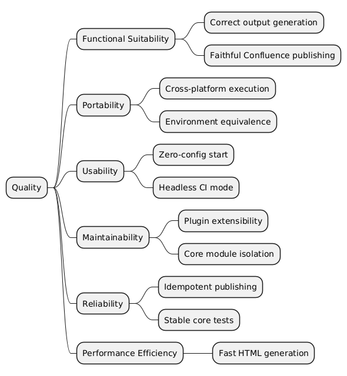
10.2. Quality Scenarios
The following scenarios are the evaluation framework for all architecture decisions (Section 09).
Each ADR must state which quality scenarios it supports or compromises.
Each scenario is written in the six-part quality-attribute-scenario form (Source, Stimulus, Artifact, Environment, Response, Response Measure) and annotated with the Chapter 1.2 top goal it concretises, or marked derived.
10.2.1. Carried forward from v3
| ID | Goal | Source | Stimulus | Artifact | Environment | Response | Response Measure |
|---|---|---|---|---|---|---|---|
QS-1 |
derived (extensibility) |
Contributor |
Wants to add a new export feature (e.g., export to Notion). |
|
Development |
They create one Groovy script and register it; no build-system knowledge required. |
No compilation step needed; the new task appears in |
QS-2 |
goal 3 (cross-platform) |
User |
Runs |
Generated HTML |
Docker vs. local |
Docker execution produces the same HTML output as local execution. |
Output files byte-identical (excluding timestamps in HTML meta tags). |
QS-3 |
goal 5 (ease of adoption) |
New developer |
Clones a project containing |
|
Fresh workstation |
They get rendered documentation, including automatic Java and docToolchain installation. |
Time from first command to viewing HTML under 5 minutes. |
QS-4 |
derived (reliability) |
Author / CI |
Triggers Confluence publishing twice for unchanged documentation. |
Confluence pages |
Network, Confluence reachable |
The second run detects unchanged content (MD5 hash) and skips the update. |
No new page versions created; attachments and labels preserved. |
QS-5 |
derived (headless CI) |
CI/CD pipeline |
Runs |
|
Headless CI (no TTY) |
|
Exit code 0 on success, non-zero on failure; no process hangs awaiting input. |
QS-6 |
goal 5 (ease of adoption) |
User |
Runs |
|
Workstation without JDK |
|
No manual Java install; installed JDK reused on later runs. |
QS-7 |
derived (stable test suite) |
Developer / CI |
Executes the test suite. |
Spock / BATS test suites |
Local or CI |
All tests pass; environment-dependent tests skip gracefully. |
Zero test failures; execution under 15 seconds. |
QS-8 |
goal 2 (performance) |
User |
Runs |
Document generation pipeline |
Local, docToolchain installed |
HTML output is generated. |
Generation completes in under 20 seconds. |
10.2.2. New for v4
| ID | Goal | Source | Stimulus | Artifact | Environment | Response | Response Measure |
|---|---|---|---|---|---|---|---|
QS-9 |
goal 2 (performance) |
User |
Runs |
|
Local, warm install |
Task starts immediately, with no build-framework init, dependency resolution, daemon negotiation, or build-graph computation. |
Startup under 3 seconds; end-to-end for 50 pages under 10 seconds. |
QS-10 |
goal 3 (cross-platform) |
User |
Runs |
Custom site generator ( |
macOS ARM64 |
Site generation completes without errors or platform-specific workarounds. |
No JNI/native-library issues; same output as on x86_64. |
QS-11 |
derived (script-first) |
Contributor |
Wants to fix a bug in the Confluence publishing logic. |
Groovy scripts |
Development |
They edit a Groovy script directly and re-run; no compilation, no JAR rebuild. |
Change-to-test cycle under 5 seconds; no |
QS-12 |
derived (LLM friendliness) |
LLM agent (via daCLI) |
Needs to read, navigate, and modify generated documentation. |
daCLI MCP server (10 tools) |
MCP over stdio |
daCLI provides structured access; docs follow Semantic Anchor conventions. |
Any section located with at most 3 tool calls; token usage under 10% of full-file reading. |
QS-13 |
derived (modern UI) |
Reader |
Opens a docToolchain-generated microsite in a browser. |
Generated microsite |
Modern browser |
The site shows responsive layout, dark mode, fast full-text search, and clear navigation. |
Visual quality comparable to Starlight/Nextra/Diataxis; page load under 1 second. |
QS-14 |
derived (v3 compatibility) |
Upgrading user |
Moves from v3 to v4 without changing |
|
Existing v3 project |
v4 |
Zero config changes for basic usage; deprecated features warn but do not fail. |
QS-15 |
derived (LLM-managed config) |
User via LLM |
Asks an LLM to configure Confluence publishing. |
|
LLM editing session |
The LLM adds only the necessary deviating settings; the config stays minimal. |
Config contains only explicit deviations from defaults; LLM reads, explains, and edits it correctly without hallucinating defaults. |
QS-16 |
goal 1 (no implicit cloud processing) |
User |
Runs |
Diagram rendering (asciidoctor-diagram) |
External service configured |
docToolchain prints a clear warning ("Diagramm-Quelltexte werden an kroki.io gesendet. Für lokale Verarbeitung setze |
Zero external API calls unless an external |
QS-17 |
goal 4 (actionable error guidance) |
User |
Hits a fixable failure (locked file, missing config, wrong credentials, unreachable API, missing tool). |
|
Any environment |
docToolchain prints what to do next — which file to close, which config to set, which command to run — not a diagnosis. |
Every user-recoverable error carries a remediation step; zero stack traces except for bugs (exit code 99). |
QS-18 |
derived (minimal repo footprint) |
User |
Adds docToolchain to an existing project repository. |
Project repository |
Any |
Only |
Exactly 2 files added (plus optional |
QS-19 |
derived (clean uninstallation) |
User |
Decides to remove docToolchain from their system. |
|
Any |
Deleting |
Zero side effects after |
11. Risks and Technical Debts
Risks for v4 differ significantly from v3. Some v3 risks are resolved (Gradle coupling, jBake maintenance), while new risks arise from the migration.
This chapter separates Risks (uncertain future events) from Technical Debt (known compromises already in the code). Risks carry stable IDs (R-NNN) referenced from the ADR Consequences in Architecture Decisions.
11.1. 11.1 Risks
Probability and Impact are rated Low / Medium / High. Priority is derived from the two (High×High ⇒ HIGH, etc.) and matches the original assessment. Rows are ordered by Priority, highest first. Each Mitigation references a Chapter 8 concept or a quality scenario.
| R-ID | Risk | Probability | Impact | Priority | Mitigation |
|---|---|---|---|---|---|
R-001 |
Custom site generator maturity. Replacing jBake with the custom Groovy SSG ( |
High |
High |
HIGH |
Ch8 Test concept — integration tests for |
R-002 |
v3 migration path. Users upgrading from v3 lose Gradle-based workflows. Projects using |
High |
High |
HIGH |
Ch8 Error Handling concept — deprecation warnings via |
R-003 |
Script loading and classpath conflicts. Without Gradle’s dependency resolution, scripts depending on external libraries (POI, jsoup, HttpClient) need a reliable classpath; class conflicts between scripts are possible (QS-1, QS-4). |
Medium |
High |
MEDIUM |
|
R-004 |
Residual inconsistent error handling. The |
Medium |
Low |
LOW |
Ch8 Error Handling concept (ADR-8) — |
R-006 |
publishToConfluence port regression. Porting the 823-LOC |
Medium |
Medium |
MEDIUM |
Service-level tests around the new script before the core module is dropped (ADR-12). |
R-007 |
Diagram-privacy control not implemented. ADR-9’s |
Medium |
Medium |
MEDIUM |
Implement ADR-9 ( |
R-005 |
Release-time dependency resolution. AsciiDoctor is embedded (ADR-6, revised); 177 JARs (~126 MB) ship in |
Low |
Medium |
LOW |
Ch8 Security concept — Trivy CVE scan of |
R-008 |
Incomplete secret redaction in output. |
Low |
Medium |
LOW |
Ch8 Security concept — |
11.2. 11.2 Technical Debt
Each item names the specific Chapter 5 building block it burdens.
| Technical Debt | Affected Building Block (Ch5) | Description |
|---|---|---|
Confluence API dual client |
Atlassian Integration scripts ( |
Two parallel client implementations (V1 Server, V2 Cloud) must be maintained. Atlassian is deprecating v1 for Cloud. Decision deferred to ADR-TBD-1. |
No Jira Cloud client |
Atlassian Integration scripts ( |
Only |
Windows-only export features |
External Tool Export scripts ( |
EA, PowerPoint, and Visio export remain Windows-only (VBScript COM automation). No fallback on Linux/macOS, burdening cross-platform portability (QS-2). |
|
Wrapper Layer / |
Embedding AsciidoctorJ + JRuby (ADR-6, revised) makes |
No v4 Windows wrapper path |
Wrapper Layer ( |
The v4 |
Hand-synchronised Bausteinsicht model and inline PlantUML |
Building Block View (Ch5) — Level-1 container view ( |
The Level-1 view exists twice: as a Bausteinsicht JSONC model (source of truth) and as inline C4-PlantUML (rendered artifact). Because Bausteinsicht has no PlantUML exporter (ADR-15), the two are kept in sync by hand and can drift. Explicitly accepted as low-cost (one view, changed rarely); retires when a text-based export path is wired (ADR-15). |
11.3. Resolved v3 Risks
| Former Risk | How v4 Resolves It |
|---|---|
Incomplete core module migration |
Resolved. The |
Dual config file confusion |
Clarified. |
jBake unmaintained / Apple Silicon |
Resolved by ADR-4. Custom Groovy SSG replaces jBake. No OrientDB, no JNI issues. |
Gradle startup overhead |
Resolved by ADR-3. No Gradle at all. Startup under 3 seconds. |
Heavy dependency footprint (60-80 JARs) |
Not resolved — reversed. The plan to externalize AsciiDoctor (ADR-6) was dropped; v4 embeds AsciidoctorJ + JRuby, so |
12. Glossary
| Term | Definition |
|---|---|
dtcw |
docToolchain wrapper. Cross-platform CLI entry point (Bash, PowerShell, Batch) that abstracts environment detection and Java installation. In v4 it builds the classpath from the |
Docs-as-code |
Methodology that treats documentation like source code: written in plain text (AsciiDoc), stored in version control, peer-reviewed via pull requests, and built automatically by CI/CD pipelines. |
Script Plugin |
(v3 — removed in v4, ADR-3.) A Gradle script file ( |
Core Module |
(v3 — being retired in v4, ADR-12.) The |
Shadow JAR |
(v3 — removed in v4, ADR-7.) A fat JAR that bundled all runtime dependencies into a single artifact for the Core Module. v4 ships its dependencies as individual JARs in the |
ConfigObject |
Groovy’s native configuration object, produced by parsing |
ConfigService |
Wrapper around |
Microsite |
A complete static documentation website generated by docToolchain’s built-in static site generator ( |
inputFiles |
Configuration array in |
ancestorId |
Confluence page ID used as the parent page when publishing documentation. Determines where in the Confluence page hierarchy new pages are created. |
SDKMAN |
Software Development Kit Manager. A tool for managing parallel versions of multiple SDKs. One of three supported installation methods for docToolchain ( |
ADR |
Architecture Decision Record. A lightweight document capturing a significant architecture decision, its context, rationale, and consequences. Follows Nygard’s format. Stored in |
Confluence Storage Format |
The XHTML-based markup language used by Atlassian Confluence to store page content. Includes Confluence-specific macros ( |
HtmlTransformer |
The class responsible for converting AsciiDoctor-generated HTML5 into Confluence Storage Format. Chains through |
JQL |
Jira Query Language. A SQL-like query language used to search for Jira issues. Used in |
Headless Mode |
Non-interactive execution mode for CI/CD pipelines. Activated via |
Quality Scenario |
A concrete, measurable acceptance criterion for an architecture quality goal. Defined in Section 10 and referenced by all ADRs to evaluate architectural tradeoffs. |
streamingExecute |
A Groovy helper method used in scripts to invoke external processes (e.g., VBScript, shell commands) with real-time console output streaming. Manages process lifecycle and output capture. |
MCP (Model Context Protocol) |
A protocol for communication between LLMs and external tools. daCLI implements an MCP server that exposes 10 tools for structured document access via stdio transport. Enables LLMs to navigate, search, and modify documentation. |
Semantic Anchors |
Well-defined terms, methodologies, and frameworks that serve as precise reference points when communicating with LLMs. Examples: "SOLID Principles", "arc42", "Socratic Method", "MECE". Each anchor activates a rich, interconnected body of knowledge in the LLM. Quality criteria: Precise, Rich, Consistent, Attributable. See https://llm-coding.github.io/Semantic-Anchors/ |
Semantic Contracts |
Bundles of Semantic Anchors composed into reusable working agreements. Defined in |
daCLI |
Documentation Access CLI. A Python-based tool providing both a command-line interface and an MCP server for structured document access. Builds an in-memory index from AsciiDoc/Markdown sources for O(1) section lookups. 10 MCP tools for navigation, search, and modification. |
Bausteinsicht |
Architecture-as-code tool (Go). Defines architecture in JSONC text files with bidirectional draw.io synchronization. LLMs read/write JSONC natively. Exports PlantUML, Mermaid, PNG for embedding in AsciiDoc. |
Groovy SimpleTemplate |
Groovy’s built-in template engine. Used for microsite HTML generation in v4 (replacing jBake’s template system). The 23 existing |
Groovy Grape |
Groovy’s built-in dependency manager. Scripts declare dependencies via |
Pugh Matrix |
A structured decision-making technique used in ADRs. Criteria are scored on a 3-point scale (–1, 0, +1) for each alternative. The alternative with the highest total score wins. |
Feedback
Was this page helpful?
Glad to hear it! Please tell us how we can improve.
Sorry to hear that. Please tell us how we can improve.